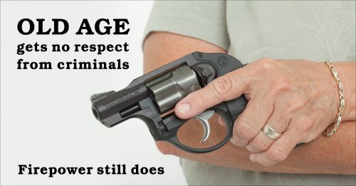
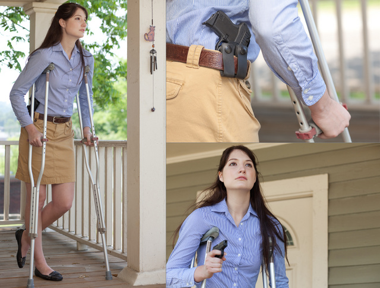
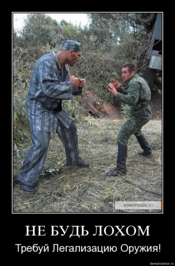
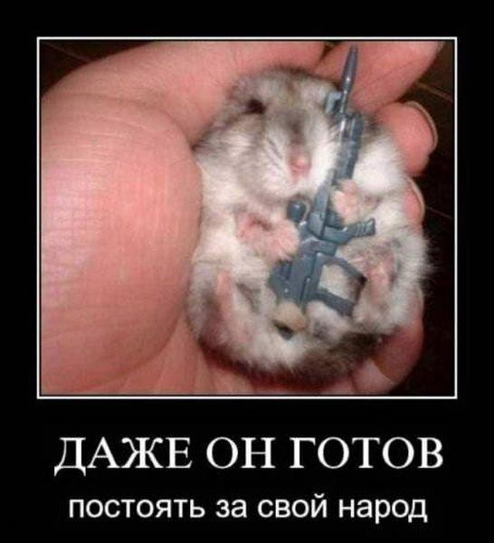
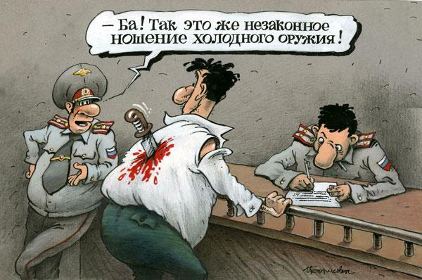
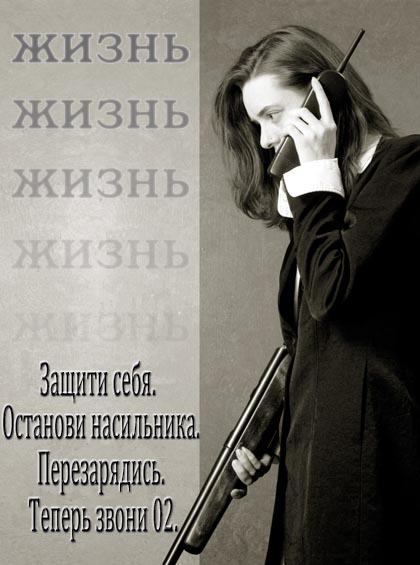

Продолжаем разговор.
irvara: проекция по Фрейду
irvara не успокоилась, когда ее "аргументы" размазали тонким слоем, а занялась толстым троллингом "мне ничего не доказали".
http://irvara.livejournal.com/286671.html : "Итак, огнестрелострадальцы любят ссылаться на опыт стран, где НОШЕНИЕ огнестрела в настоящее время разрешено. Давайте посмотрим, что дал аналитический обзор этих стран, на "положительный" опыт которых ссылаются эти, мягко выражаясь, некомпетентные особи".
Методика подлога стандартная: сравниваются разные страны, а не положение дел в одном месте до и после разрешения/запрета КС. Даю ссылку исключительно для профилактики, чтобы не было воплей на тему "ага, такие аругменты проигнорировали!".
Там еще показательное: "даже традиционно «оружейные» и вынужденно вооружившиеся из-за войны страны стараются разоружить своё население". А с чего бы, интересно, равняться на эти самые страны? Как раз логично задуматься: ЗАЧЕМ они разоружают население. Причем на фоне все учащающихся этнических беспорядков.
Посмотрим следующий пост, побольше.
irvara: отращивание пиписьки
http://irvara.livejournal.com/363500.html
"Мда, совсем другому вопросу я собиралась посвятить нынешние ВСЗ. Но случилось страшное кое-что, заставившее меня ещё раз вернуться к теме «легализации ношения короткоствольного огнестрельного оружия», или, для краткости , к теме «легализации огнестрела» (ЛО).
Прошу прощения у рафинирующих интеллигентов из числа моих посетителей за малоприличные картинку и название поста: увы, бывают ситуации, когда приходится переходить на не совсем приличный, но единственно правильный стиль изложения.
Блогер naganoff (красноречиво говорящий сам за себя псевдонимчик!) в: намедни подверг тщательнейшему разбору мой большой пост "Прощай, оружие!", где я до жидких соплей с разных сторон – аспектов разжевала несомненный вред от ЛО, причём, так , чтобы было понятно даже полному имбецилу .
Также недавно из-за вновь разгоревшейся у меня в блоге дискуссии в другом посте: "Ну, достали эти огнестрелострадальцы" (см. выше -- W.) привела немало данных, свидетельствующих о не оправдавшихся надеждах от ЛО даже в тех немногочисленных странах, где оружие пока что (!) легализовано и на которые очень любят ссылаться наши огнестрелострадальцы, как я их обычно называю .
Всю эту «аналитику» от naganoff перепостила фуева туча огнестрелострадальцев, о чём мне приходила все эти дни такая же фуева туча сообщений от пингбота со ссылкой на мой пост – аж замаялась удалять этот бесконечный поток...
Нет, я не собираюсь по-новой разбирать аргументацию «против» и «за» ЛО: в главном посте, как уже отметила, было разжёвано и сказано всё. А в моих ответах на комментарии к нему были дожёваны даже все мелкие недопонятки, которые могли возникнуть по ходу чтения поста у особей , не особо отягощённых интеллектом…"
Ну да, все разжевано и сказано. А также выбрано и откомментировано в предыдущей части. Уровень аргументации очень нагляден.
"бывают ситуации, когда приходится переходить на не совсем приличный, но единственно правильный стиль изложения" – ага, и эти ситуации называются "меня довели до истерики". Кстати, что и зачем рафинируют интеллигенты из числа ее посетителей? Мелочь, конечно, но синтаксические ошибки при написании устоявшихся выражений – признак такой дярёвни... Рафинирующие интеллигенты, обожженный холод, знает кошка, чем мясо съела...
"Вот и этот Пистолет Револьверович Наганофф ничего нового к дискуссии не добавил. Как и его предшественники, он с щенячьей радостью сравнивает запрет на огнестрел с запретом на автомобили, хотя огнестрел – это ОРУДИЕ УБИЙСТВА, а автомобили – всего лишь средство перемещения в пространстве. Впрочем, меня этим не удивишь: мои недалёкие оппоненты с чем только огнестрел не сравнивали – с табуретками, с кухонными ножами, с другими бытовыми предметами – как им казалось, проводя чрезвычайно «логичную» аналогию запрета этих созданных именно для решения бытовых проблем предметов с запретом предметов, предназначенных исключительно для уничтожения себе подобных".
 Неее,
автомобиль – не средство для перемещения в пространстве. Автомобиль –
средство для кругосветных путешествий. Ну ведь можно на нем объехать вокруг
земного шара? Чисто так теоретически? Вооот. Не собираетесь в кругосветку –
значит, незачем вам машина. Спросите, почему? А я так решила.
Неее,
автомобиль – не средство для перемещения в пространстве. Автомобиль –
средство для кругосветных путешествий. Ну ведь можно на нем объехать вокруг
земного шара? Чисто так теоретически? Вооот. Не собираетесь в кругосветку –
значит, незачем вам машина. Спросите, почему? А я так решила.
Если серьезно. Огнестрельное оружие – это средство для быстрого проделывания отверстий практически в любых предметах. И ничего более. Результатом применения оружия может быть дырка в стене, разбитое окно, ранение человека или животного – летальное или не летальное. Точно так же результатом применения табуретки может быть отсутствие усталости в ногах, а может – проломленная голова.
Скажете – "но на табуретке чаще сидят, чем используют ее для убийства"? Отлично, значит, для вас имеет значение слово "чаще". А из огнестрельного оружия людей чаще ранят или вообще только пугают предупредительным выстрелом (говорю, опираясь на опыт ежедневного мониторинга криминальных новостей, работа у меня такая). Вот и отличненько, вот и разобрались. Табуретка – для сидения, пистолеты – для ранений.
Да, кстати, исходя из того же мониторинга. Табуретка – одно из самых распространенных орудий бытовых убийств. Кроме шуток.
А опять навешивание ярлыка. Короткоствол – он не "для убийства", а для самообороны. Вполне эффективно будет прострелить ногу, например. Ну и если кто помер, то целью-то все равно стоит не "убить", а "оборониться от преступника". "Для убийства", и то с натягом, можно назвать как раз винтовки и т.п. оружие, предназначенное для стрельбы издали. Или дробовики, которые предназначены именно для уничтожения цели – дозированные повреждения там не нанесешь. Как говорится, прицел для дробовика – это красная лампочка с дуршлагом. А пулю 12 калибра в руках держали? Что случается с мишенью, видели? Помнится, как-то делаю три выстрела пулями в деревшку метров с 15-ти – и вижу пять (!) дырок. Оказалось, фанеру пробили не только три пули, но и два пластиковых пыжа. Такое – разрешено, а КС – нет. Где логика?
Ну и опять психологически: мол, любое лишение жизни – это убийство! А убийство – низзя, даже если вас убивают!
Англоязычным, казалось бы, проще – там to kill и to murder – разные слова, отливаются по смыслу. Но и там прогибиционисты пишут ровно то же самое – так что это именно что общечел-овеческие глюки, а не просто семантическая путаница.
Ах да, про автомобили:
http://armed-defence.livejournal.com/88729.html
В дом к 67-летнему Джеймсу Митчеллу вломился 51-летний Кевин Квинн. Но не абы как - а сквозь стену и на своем пикапе.
Свидетели сообщают, что у этой пары никогда не было теплых взаимоотношений, но после увольнения Кевина Джеймсом, тот похоже совсем сошел с катушек.
Протаранив стену – он попер с угрозами на старика. Тот попытался убежать, но бегать в 67 лет как то не очень удается – так что Кевин его и перехватил. В завязавшейся потасовке последний и был подстрелен несколько раз. Смертельно.
Что характерно – полиция прибыла через 1мин. после того как прозвучал последний выстрел.
Дело было признано чистой самообороной. Source.
Что характерно:
– полиция хоть и быстро, но прибыла уже к разбору.
– События – ну чистая бытовуха, не так ли?
– Оружие – решает. Уравнивая в возрасте, физической подготовке и численности.
В качестве средства агрессии использован другой источник повышенной опасности – автомобиль. Что, сука, характерно, никому же в голову не приходит бегать с лозунгами: "Запретить автомобили!"
"Как и его предшественники, naganoff притягивает мнения «авторитетов». Таких как, например, мой старый «друг» по долгой переписке МУШурик ( Моральный Урод Шурик Никонов), призывающий к легализации также и наркотиков, и проституции, и официальных убийств больных взрослых и детей. Ну, а про Максима Калашникова и его завиральные идеи у меня будет вскорости отдельный пост. Да и вся остальная перечисленная компашка «авторитетных» сторонников ЛО оставляет желать лучшего. Особняком – Веллер, который, кстати, отчётливо обозначал свою позицию: ЛО сейчас хоть и нужное , но на самом деле несомненное ЗЛО, в дальнейшем требующее запрета. Впрочем, Веллер призывает и к установке диктатуры, которую, конечно, вряд ли поддержат наши многочисленные любители огнестрельных игрушек ( хрена ведь им при диктатуре дадут пострелять – а , что более вероятно, самих этих «стрелков» перестреляют)"
 Похоже,
мадам считает ссылкой на авторитет упоминание автора тезиса. Гуманитарного
мышления синдром, однако.
Похоже,
мадам считает ссылкой на авторитет упоминание автора тезиса. Гуманитарного
мышления синдром, однако.
Ну а что касается стрельбы при дикататуре, то откуда, по-вашему, взялся вот этот нагрудный знак?
Нормальное государство как раз заботится о том, чтобы граждане были всесторонне развиты, в том числе и в этой области. В конце концов, если нападут на страну, то что предлагают делать прогибиционисты? Сразу сдаваться?
"Итак, недопустимость ЛО, понятную всем цивилизованным людям, разбирать не буду. Для нецивилизованных лишь кратко повторю: запрещать ЛО необходимо не потому, что мы все перестреляем друг друга, а потому, что решать проблемы стрельбой в принципе НЕЦИВИЛИЗОВАННО. Правда, нашим дикарям этого никак не понять, как не понять папуасам Новой Гвинеи основы матанализа".
Так и запомним: решать проблемы надо не эффективно, а цивилизованно™. Как не трудно догадаться, выгоден такой подход исключительно двум группам: а) тем, кто эти проблемы создает непостредственно; б) "цивилизованным", которые хотят, чтобы у кого-то были проблемы.
"На сей раз разберёмся вот в чём: а что представляют из себя наши огнестрелострадальцы? Попробуем нарисовать их усреднённый социологический портрет. С некоторыми из них мне довелось увязать в длинных дискуссиях, блоги многих, в том числе и тех, кто так бурно поддержал «аналитику» Нагана Пистолетыча, тоже поизучала.
У всех из них можно найти много сходных признаков. В среднем огнестрелострадальцы – это мужички возраста самого пика половой активности, по-видимому, не всегда полностью удовлетворённой, фанатично интересующиеся различным оружием и бесконечно обсуждающие его. В этих мужичках часто прослеживается обиженность жизнью и желание взять у неё реванш, причём, исключительно с помощью силы, а не чего-либо другого. Это, как правило, очень агрессивные самцы (женщин среди сторонников ЛО почти нет) с бурлящим тестостероном, в массе своей злобно ненавидящие власть, начальство, конкурентов, «чужаков» и др. В большинстве своём они удачно откосили от армии (а фигли «эту» страну защищать, то ли дело себя, любимого) и уж тем более не воевавшие, а , значит, реально не нюхавшие пороху."
Источников такой статистики не указано – т.е. все на личном вмечатлении из весьма узкой выборки. Но суть не в подлоге, а в психологии такого "анализа". Скажем, понятно, что мужчины более часто интересуются оружием – но откуда взялось "среди сторонников ЛО почти нет женщин"? Дело в другом: девушки обычно просто не задумываются над проблемой, поэтому у них не сформулирована четкая позиция, а на вопрос "ты за?" резонно следует "нет" – что вовсе не значит "категорически против". Как раз с неделю назад, как начал собирать материал для этой статьи, проверил на любимой девушке: стоит прояснить вопрос, все быстро переходит к четкому "за".
А есть и другая категория: "низзя, потому что не гуманно", "ах-вдруг-что-случится" и т.д., не имеющие никакого отношения к разумной аргументации. Согласен, такое чаще встречается среди женщин – просто потому, что женщины более склонны к истерическому игнорированию аргуменов. Но не настолько же, что разумных среди них "почти нет"! Это уже оскорбление женщин оптом.
Откуда взялось "в массе откосившие" – опять же, не знаю. Но интереснее другое: безусловное осуждение агрессии. "Злобно ненавидящие" – это проекция, из-за слонности к истеричности автор не понимает, что позиция "устранить врага" может быть и безэмоциональной. Но вот список "против чего они еще" показателен: "правильный, не-агрессивный цивилизованный индивид" должен быть не против власти, начальства, конкурентов и чужаков. Что бы они ни делали (с учетом того, что означенные категории творят в России).
"Кстати, профессиональные военные, насмотревшиеся ужасов вооружённых заварушек, как правило, категорически против вооружения мирного населения. Против ЛО в основном и самая незащищённая часть населения – старики, женщины, дети. Они, за редким исключением, прекрасно понимают, что сами не будут пользоваться огнестрелом при его легализации, а на вопрос: «Хотите ли вы, чтобы по вашим улицам ходили многочисленные дядьки с официально разрешёнными пушками в карманах? » - в ужасе машут руками: «Нет, конечно!» - ведь чёрт его знает, чего от этих «дядек» можно ждать.
А вот naganoff , например, ссылается на опрос, согласно которому за ЛО - 80% . Враньё, конечно. Опрос, ясен пень, оружестрадальцы проводили преимущественно сами среди себя, а, именно, среди тех, кто уже и так «озабочен» оружием. Но даже если бы это было так, и большинство населения было за ЛО, то означало бы это только одно: наше общество сильно деградировало. А что делать в стране, где большинство – деградантов? В таких случаях шанс на спасение только один : здоровое меньшинство (даже если это «ЕдРо» =) действительно должно диктовать свою волю взбесившемуся и больному большинству. Например, сколько процентов населения у нас ворует, берёт и даёт взятки? Тоже, наверняка, немаленький процент. И что? Узаконим воровство, взяточничество и другие «ментальные» занятия или всё-таки хоть и малыми силами, но будем этому противодействовать?"
 Наглядно
показано, как подтасовываются результаты опросов. Я не про "среди
сторонников легализации", а именно среди населения". На вопрос про
"многочисленных вооруженных дядек" ответ, понятно, будет "нет, ужОс". А
если вопрос поставить коррекно: "Хотели бы вы, чтобы законопослушные
граждане могли приобретать короткоствольное оружие для самообороны и защиты
других от преступников, у которых и так есть нелегальное оружие?". То-то же.
Наглядно
показано, как подтасовываются результаты опросов. Я не про "среди
сторонников легализации", а именно среди населения". На вопрос про
"многочисленных вооруженных дядек" ответ, понятно, будет "нет, ужОс". А
если вопрос поставить коррекно: "Хотели бы вы, чтобы законопослушные
граждане могли приобретать короткоствольное оружие для самообороны и защиты
других от преступников, у которых и так есть нелегальное оружие?". То-то же.
Кстати, ссылка на "дети против легализации КС" особенно понравилась. Дело даже не в том, что дети – это не самые сильные аналитики (еще бы спросили у детей, хотят они питаться правильно или чипсами и конфетами), просто возник вопрос – откуда данные-то? Кто и как проводит опрос на эту тему среди детей? Очень интересно.
И, если уж говорить о детях, я как-то не припоминаю, чтобы кто-то из мальчиков отказался бы пострелять. Да и большинство девочек – тоже, особенно если это не сопряжено с чисткой, разборкой-сборкой и проч.
"Аналитик" naganoff призывает запретить мигалки, спецномера и прочие привилегии и при этом разрешить огнестрел. А ведь огнестрел, ежу понятно, немедленно превратиться в привилегию, которой воспользуются именно вышеупомянутые агрессивные особи, преимущественно мужского пола.Для цивилизованного общества логично как раз запретить ВСЕМ и мигалки, и спецномера и уж тем более огнестрел.Человечество веками шло к отмене пещерных способов решения проблем, к которым нас пытаются вернуть сторонники ЛО.
Даже у нынешних диких горцев, где «мужчына тот, кто аружыэ ымээт», когда их резня на почве кровной мести в очередной раз заходит в тупик, принято обращаться за решением к мудрости старейшин, которые только и могут остановить эту резню. Или, может, наши оружестрадальцы не знают про дикое государство Сомали, где оружие есть у всех желающих, а в стране при этом полный беспредел?"
Хоплофобия прогибиционистки в явном виде. Мол, оружие всех перестреляет, кто бы им ни владел.
Было бы, кстати, интересно – а как она предстваляет себе правильного с ее т.з. мужчину, цивилизованного и не агрессивного, в случае форс-мажора, где требуется применение агрессии? "Нехорошо так делать, я подам иск через адвоката"?
И опять же, смена тезиса – разве сторонники легализации хотыт выдать оружие всем желающим подряд? А вот "дикие горцы" уже аружыэ ымээт. И что делаеть безоружному "цивилизованному человеку", когда на него и его близких нападают с оружием?
По ходу дела, "цивилизованного и неагрессивного мужчину в случае форс-мажора" она представляет так: "Эээ, ребят, вы чо, обурели, у меня батя депутат, я владелец банка, а Деда Хасана знаете? Вот он мой крестный! Охрана!!!".
"Так зачем, чёрт побери, оно им? Для решения каких проблем? Разве они каждый день рискуют жизнью, пробираясь к офисному компу и потом обратно к домашнему компу, чтобы так вот рьяно добиваться ЛО? От кого им нужна постоянная защита? Ведь у нас, слава Богу, пока ещё не как в Бразилии, где как раз легализовано оружие и где страшно выйти на улицу вечером. И нет у нас пока ещё этнических гетто, куда боятся соваться даже полицейские, как в превозносимых огнестрелострадальцами США с их легализованным оружием. Почему огнестрелострадальцам не подходят никакие другие способы и предметы защиты, а нужен именно огнестрел, легко и непринуждённо делающий смертельную дырку в голове непонравившегося им соплеменника?"

А каким образом из "требуется редко" следует "вообще не нужно"? Я под дождь не каждый день попадаю, но зонтик-то заранее купил, чтобы был, если понадобится. И аптечка есть.
И опять же: ни один прогибиционист еще не смог предложить способ самообороны, более эффектвиный, чем КС, причем для любого – старика, инвалида, хрупкой девушки...
"В посте «Прощай, оружие!», к сожалению, я уделила не так много внимания психологическому аспекту, а ведь именно этот аспект, похоже, и даёт ответы на все поставленные выше вопросы и лежит в основе желания многих наших агрессивных второранговых мужичков иметь «ствол на кармане».
Всем грамотным хорошим психологам известно : не имея возможности другим путём завоевать своё «место под солнцем», интуитивно чувствуя свою ущербность, малоразвитость, никчёмность, внутренне несостоятельные особи пытаются самоутвердиться с помощью внешних знаковых предметов: ствола, тачки, хатки и т.п. Среди моих единомышленников и друзей, не являющихся профессиональными психологами, это явление называется гораздо проще: мужички отращивают себе пипиську. Сразу к месту вспоминается, конечно, и Фрейд. Ведь он писал больше не о страхе перед оружием , о котором упоминает naganoff, а в основном как раз о комплексе «пенисной недостаточности» и его последствиях .
Вот эти-то последствия мы и наблюдаем постоянно в нашей реальности.Надыбал, скажем, никчёмный мужичонка деньжат на крутую тачку и рассекает на ней, страшно гордый собой и презирающий всех остальных, по дорогам - только успевай от него уворачиваться. Диагноз очевиден : «отращивает пипиську». Аналогично «жалобно блеющие, мелко трясущиеся в ужасе животные» (определение от naganoff) уверены, что, заимев пушку, они мгновенно превратятся в грозных для всех суперлюдей. А на самом-то деле тоже всего лишь мысленно «отращивают пипиську» . И тут уместно опять вспомнить Гоблина с его точной формулировкой: вооружённый баран – это всё равно баран, а не волк".
И снова: каким образом из того, что некоторые имеют именно такую мотивацию, следует, что все имеют такую же? "Аналитик" лажается в простейших силлологизмах, старательно пытаясь представить себе рост чужих пиписек – что бы по этому поводу сказал бы Фрейд?
Что же касается психопатологии, то очень показательно как стремление к отрыву от действительности ("это никогда не понадобится"), так и деление на "баранов/волков". Проекция, опять к тому же Фрейду...
"Ещё перл от naganoff: «Ведь если у людей появится оружие - они почувствуют уверенность в себе и своих силах, и это сразу приведёт к повышению гражданского самосознания». Ага. Дай любому агрессивному недоумку средство устрашения окружающих и у него автоматически появится «гражданское самосознание». Выходит, чем длиннее пиписька страшнее оружие – тем больше самосознания? А уверенность в себе, конечно, может дать только железяка, которой можно изувечить или убить своего соплеменника...Какое-то пещерное мышление для XXI века! И вот такой бред постят и многочисленно перепостят сотни наших оружестрадальцев".
И опять – откуда "все"? Законопослушный гражданин, получив возможность эффективной самообороны, а также возможность прийти на помощь другим, станет более уверенным в себе. НЕ "до этого был трясущимся невротиком, а станет суперменом", а именно что "почувствует уверенность в себе", причем именно в этом плане – обороны от преступников.
Вполне возможный случай: нападение противника, заметно превосходящего по ТТХ. ИМХО очень понятно, что имеется в виду под уверенностью в себе, если есть КС.
Гражданское самосознание – это не понты, как проецирует irvara. Это ситуация "идет гражданин и видит, как несколько подонков избивают девушку", например. Если вмешаться просто добрым словом – изобьют и тебя, смысл? А вот если наставить пистолет или револьвер – то можно добиться куда лучшего понимания.
Запрет на КС ведет к тому, что граждане понимают, что приходить на помощь смысла нет. И постепенно это неизбежно приводит к формированию привычного поведения "этого и не надо делать", так как иначе будет серьезнейший когнитивный диссонанс "было надо, но я струсил". К чему это приводит в социальном плане – думаю, понятно.
"На самом деле, сограждане, всё это очень грустно. Наше общество становится всё более разрушительно-агрессивным, злобным, готовым к немедленной расправе над любым явным или мнимым обидчиком, убеждённым, что все вопросы должны решаться силовыми способами."
А это откуда следует? Каким образом из "силовые способы допустимы" следует "все вопросы должны решаться только так"?
«Население перестаёт быть быдлом, когда у него есть оружие» - вещает naganoff , поддерживаемый другими огнестрелострадальцами. Конечно плохо, никто не поспорит, когда в стране много быдла, но если в стране становится ещё и много ВООРУЖЁННОГО агрессивного быдла с пещерным мышлением , то тогда это уже не просто плохо, это - уже настоящая катастрофа для страны...
И опять про "быдло"... Все же забавно, что прогибиционисты считают русофобию аргументом.
***
dozor1911: Ваша проблема в выводе, который вы написали в конце статьи. Вы априори считаете народ России или большинство его быдлом.
И из этого делаете вывод, что быдло будет вооружаться. Может, и будет а, может, и нет, но это быдло ещё управляет самолётами, поездами, машинами. Это быдло может вас убить ножиком или топором, а вам, не-быдлу, нечем будет противостоять. И какая разница, как его потом накажут – вы или вашие близкие мертвы за ваши принципы. Цена вопроса не в деньгах или больном обществе, а в лично каждом, кто желает иметь не панацею, а шанс (я лично имею шанс). Никто не обязан покупать оружие, так как это его выбор, но мы говорим не о раздаче пистолетов как рекламных буклетов, а о ПРАВЕ И ВОЗМОЖНОСТИ для граждан, а не для мигалочников. Вы так и не поняли, что у них оно есть в виде наградного. Тот же Гудков является вашим соратником в деле запрета оружия, лично сам имеет пистолет - он признался сам.
Знаете, в отличие от Наганова, я не собираюсь писать по пунктам вашу статью или спорить. Я просто хочу понять, чего конкретно вы боитесь, и на основе каких фактов возникли эти страхи.
И в какой-то момент я понял, чего вы боитесь. Вы боитесь остаться в меньшинстве и желаете, чтобы вам составили компанию побояться. :)
Других каких-либо обьяснимых причин я не мог найти, хотя перечитал вас считай всех, и видел все ваши аргументы.
irvara: "Миллионы легального короткоствола на руках"... И что? А миллионы торгуют наркотой, миллионы воруют, миллионы нарушают ПДД и т.п. Если нечто исчисляется миллионами - это абсолютно не означает, что это нечто - есть хорошо и его на этом основании надо признать и узаконить.
Ну так аругмент-то в другом. Не "надо узаконить все, что есть", а "оружия на руках и так много, и никакой катастрофы не произошло".
irvara: У сотрудников МВД, как и у пограничников, как и у противовоздушников, ядерщиков и пр. оружие - не для ЛИЧНОГО пользования (оберегания собственной жопы), а для выполнения порученных им обществом заданий. Опять путаешь тёплое с мягким =)
Мало того, что они должны быть обучены для этого на высоком уровне, так и находятся под постоянным контролем. Вне работы оружие обязаны сдавать.
Только вот не начинай сразу пиздеть про потерю или продажу сотрудниками оружия, про евсюковых, врывающихся в супермаркеты - это преступления, которые в цивилизованном обществе должны подвергаться жесточайшему наказанию.
logan_666: Разрешение на КС нужно для создания ситуации ПОВЫШЕННОЙ ОПАСНОСТИ ДЛЯ ПРЕСТУПНИКА. Т.е. сейчас преступник знает, что потенциальная жертва не может оказать ВООРУЖЕННОГО сопротивления. А вот если ношение гражданами КС легализовано, то преступник знает, что жертва МОЖЕТ БЫТЬ вооружена, и МОЖЕТ БЫТЬ окажет вооруженное сопротивление. И если это "может быть" хотя бы в одном проценте случаев предотвратит нападение - это уже хорошо.
irvara: Разрешение на КС влечёт создание ситуации повышенной опасности не для преступников, сколько раз тебе повторять, а для мирных граждан. Преступники КС не боятся, при ЛО тоже обязательно легально вооружатся, как и многие тупые агрессивные обыватели-огнестрелострадальцы. И вот это будет действительно ОПАСНАЯ ситуация для остальных нормальных людей.
Забавно, как аругмент "преступнику не имеет смысла совершать преступления с легальным КС" попросту игнорируется раз за разом.
Не понятно, почему это сотрудники силовых структур лишаются права защищать других во внерабочее время. И совсем уж странно, что оберегать собственную жопу – это типа нехорошо, можно только чужую.
irvara: Повторяю для тех, кто в танке: огнестрел - предмет СПЕЦИАЛЬНО созданный для убийства и других функций не имеет ( как и всё оружие, включая ядерное).
logan_666: Ядерное оружие - это не оружие нападения. Это - оружие сдерживания. Это что бы на тебя не напали.
Пистолет в руках преступника - это инструмент совершения преступления.
Пистолет в руках добропорядочных граждан - инструмент противодействия преступникам. КС защищает от преступников самим фактом того, что он МОЖЕТ БЫТЬ У ЖЕРТВЫ.
Все это было уже озвучено ранее, но контраргументов нет, есть лишь повторение штампа.
irvara: - опишите мне ситуацию, когда вы ежедневно подвергаетесь угрозе лишения ЖИЗНИ так, что вам необходимо постоянно иметь при себе КС (не ружьё!)
- докажите, что в этой ситуации только КС является единственным решением этой проблемы.
kajibtep_l: Вы приводите заранее невыполнимые условия пари - я не на войне, чтобы каждый день подвергаться угрозам жизни. Перефразирую древнюю китайскую пословицу - оружие мне может вообще понадобиться один раз в жизни - но ради этого я готов носить его с собой каждый день. Это мой выбор.
И в этой ситуации КС может оказаться не столько единственным решением проблемы, сколько наиболее эффективным.
Подмена тезиса: КС является самым эффективным и достаточно доступным (при легализации) обычному гражданину. Но, понятно, что это не единственный возможный в теории способ: богач может нанять охрану, которая будет рядом даже в его спальне, а некоторые вообще стали президентами и их охраняет ФСО.
cruz_a: В Бразилии купил нелегальный ствол - дело пяти минут. Он куда дешевле легального. А за легальный еще побиться надо. И при этом долбоебы из правительства хотели даже это отобрать, типа "насилия будет меньше". А там примерно 5 нелегальных на 1 легальный. Цырк, бля. Идиоты не только у нас.
Ну так и шизофреники не только у нас, что удивляться-то. Умственная недостаточность тоже вполне интернациональна.
Андрей Круз: о спасении утопающих и о тех, кто ему мешает
Почитаем посты и комментарии к ним нехорошего писателя Андрея Круза.
http://cruz-a.livejournal.com/116091.html
blackbastet: Оружие в моих руках будет опасно прежде всего для меня) Я тормоз, голова не дружит с телом, в экстремальных ситуациях впадаю в ступор. Это все, наверное, лечится тренировками, но пока ситуация вообще не в мою пользу.
cruz_a: Лечится. Пять занятий. Еще дома немного полезно потренироваться. И в тир походить, потому что это интересно.
Обратите внимание на корректное: "пожалуй, я лично не смогу". Но при этом нет же требования запретить всем другим!
cruz_a: наличие пистолета и не предполагает изменеия образа жизни. Нарываться все равно не надо. Но проживая в Панаме, один раз шуганул шпану от женщины. Не было бы "коммандера" под рубашкой - не решился бы даже сунуться, зарезали бы. А не сунься - думаю, что ей бы плохо пришлось. Но вот пистолет с собой спас всех. Увидели - и даже прощаться не стали, ломанулись по улице.
http://cruz-a.livejournal.com/115741.html
deadmanru:
У нас в Латвии, один шуршал попкорном во время киносеанса. Ему сделали замечание, на что он достал пистолет и прострелил голову 4-е раза тому кому мешал его попкорн.
"В связи с субботним инцидентом в столичном кинотеатре Kino Citadele задержан мужчина, 1983 года рождения, сообщили агентству BNS в Государственной полиции. Также стало известно, что погибший — мужчина, 1968 года рождения.
По информации имеющейся в распоряжении агентства Leta, спор между мужчинами возник из-за попкорна. Мужчины ранее не были знакомы. Они с самого начала сеанса стали спорить из-за слишком громкого поедания попкорна, затем ссора стихла, но в конце сеанса вновь вспыхнула, и молодой мужчина застрелил старшего.
По информации агентства BNS, мужчина был убит из легального оружия. Стрелявшему официально принадлежит еще два огнестрельных "ствола"."
Правда крута? Сходил в кино, а оказался в морге, бо ты не понравился какому то идиоту со стволом...
Причём этот стрелявший был юристом, имел дома целый арсенал и
постоянно писал всякие статьи на тему, что надо разрешить населению иметь
столько оружия сколько оно хочет, в том числе автоматическое.
Владельцы похороных услуг ваш выбор одобряют, даёшь легалайз!
cruz_a: Таких случаев было много? Я вот слышал про мужика, который ебался и сдуру хуй сломал. Давай мы тебе ебаться запретим, а?
А еще примерно 5000 человек в год погибает, подавившись едой. Так чтобы за колбасой ты больше без лицензии и свидетельсва того, что ты умеешь ее жрать, не приходил.
Да, около 300 человек умирет, упав с унитаза. Завтра сдаешь экзамен на умение срать! Или нет, будешь в памперсах ходить.
Весьма характерная подмена статистики тыканием в некий локальный случай. Никто же не требует запретить автомобили, хотя аварий происходит много.
k0hqpat wrote:
Я.О.Волохов "Слово смерти"
"...Именно поэтому нам с вами не дозволено легально иметь и носить с собой сколь-нибудь серьёзное компактное оружие. Это якобы приведёт к росту преступности. При этом как бы забывается, что именно у преступников и этнических группировок оружия уже запасено немеряно.
Более того рынок нелегальной торговли оружием за 2004-2006 оказался практически пуст. Всё скуплено криминалитетом, причём не русским.
Прискорбно сознавать, что наши родные торговцы оружием не понимают, что проданные инородцам стволы будут направлены на русских, на них самих, их близких, детей и родителей. Бизнес есть бизнес.
На самом деле власти просто не нужен гражданин, способный активно и эффективно защищаться. Это не выгодно и опасно. Такого гражданина нельзя безнаказанно унижать, грабить и третировать, над ним нельзя издеваться или вымогать деньги.
Нет. Мафии-правительству-бандитам выгодно, чтобы народ-раб
сидел в дерьме с голой жопой и был беззащитен со всех сторон. Такой народ можно
бесконечно и безнаказанно уничтожать и обворовывать.
Помните замечательные слова?, "...русских стрелять, а выживших привлекать за
разжигание межнациональной розни..."
А стрелять легче безоружных. Поэтому оружие должно быть у всех, кроме русских.
Оружие нашему народу давать нельзя, ибо русское население дикое и не сознательное. А на Кавказе все цивилизованные и сознательные настолько, что им можно.
Кавказцы настолько культурны, гуманны и цивилизованны, что традиционные кинжалы у них давно заменены пистолетами и автоматами.
И это наши власти воспринимают нормальным.
Среди всех равных граждан - кавказцы ровнее всех.
Не для них писан закон. Закон писан для русского быдла, которому оружие нельзя.
Ибо наверное это русские объявляют газаваты, джихады, организуют теракты и воюют с врагами своего бога?
Поэтому русским нельзя. Россия не для русских.
Россия для всех, кроме русских.
Кавказу - можно...."
naganoff: Возник технический вопрос к Вам как к инструктору. Тут кто-то утверждает, что для того, чтобы научить человека использовать ствол по назначению без причинения повреждений посторонним людям, придется заниматься в тире три раза в неделю с инструктором, чуть ли не по программам подготовки телохранителей, жечь каждый раз примерно по 500 патронов. Можете ли Вы, как профессионал, обрисовать в общих чертах, по какой программе Вы бы предложили в России готовить людей в случае легализации оружия?
cruz_a: Самообронный пистолет? Пять занятий, примерно 250 патронов. Это довольно большой объем заний и практики. Можно и в меньше уложиться.
naganoff: По ходу обсуждения, возник ещё один вопрос к Вам, как к инструктору. Если приходит человек в стрелковый клуб, и инструктор его начинает готовить - то он как-то может определить (почувствовать), способен ли этот человек на выстрел в другого человека? Может ли он переступить психологическую грань?
Вообще, имеет ли этот аспект какое-либо значение при подготовке? Может, об этом никто и не думает особо...
cruz_a: Есть специальные методики, которые принято использовать. От "живых" мишеней, с фото, до катания по мозгам на предмет объяснить: "Тот, кто вышиб к вам дверь, пришел не с целью обсудить погоду". Действует.
Плюс обучение рефлективным действиям. Когда в мозгу включается сигнал тревоги, огонь ведется не по человеку, а по цели. Силуэту. До полной НЕЙТРАЛИЗАЦИИ.
В общем, стреляют. Ну и инстинкты срабатывают, когда что-то совсем плохое ожидается, или дети близко, начинают работать инстинкты.
elte_igel: Вы, Андрей Круз, дебил, и это не оскорбление, а диагноз.
Доказательство очень простое.
Представьте себе, что Вы - не герой-удалец, как вам мерещится в Ваших "wet dreams".
Представьте себе, что вы - девушка, или дедушка, или бабушка с внуком, или молодая мама с коляской, или школьник-подросток, идущий домой. То есть, человек, у которого НЕТ "короткоствола", или, даже если есть, то нет ни физической возможности, ни моральной решимости стрелять в людей до того, как они выстрелят в Вас.
А теперь - вопрос. Ты, мудило, если ты вообще способен представить себя другим человеком, ты будешь чувствовать себя в БОЛЬШЕЙ, или МЕНЬШЕЙ безопасности, - в таких вот условиях - если у любого (любого!) встречного, вероятнее всего, в кармане лежит заряженный пистолет?
Да нет, даже спрашивать не нужно. Дебил потому и дебил, что талдычит своё, и не понимает, кто и что, собственно, делает, и почему.
skolzky_led: Вы зря истерите девушка. Дело в том, что любой встречный поперечный не станет применять зарегистрированный ствол где ни попадя. А применить "левый" и сейчас могут. А вот, увидев например, что вооруженный бандит вас насилует и вступиться за вас, сейчас мало кто решится, потому что безоружен. Разве что сам отбежит подальше и позвонит куда надо. Но, то пока отбежит, пока дозвонится, пока приедут.... А так, глядишь и одной прилюдией всё бы обошлось.
alex_tushinsk1y: Естественно, если у любого МОЖЕТ оказаться заряженный пистолет, девушка, дедушка и бабушка с внуком должны себя чувствовать в БОЛЬШЕЙ безопасности. Это любому дебилу понятно.
Тут характерное либерастичкое мировосприятие: в голову даже не приходит, что вооруженный гражданин может (и будет!) применять свое оружие для защиты других.
Как шельмуют статистикой, без учета особенностей территории, национального менталитета и др.:
cruz_a: Херня. Выборка по черным гетто. Мемфис... гы... Он в Америке за анекдот уже. Детройт, где кроме негров с вэлфером никого не осталось, город умер, живут только гетто, где у людей нет денег чтобы съебаться. По Солт-Лейк Сити поищи статистику.
Объясняю: возьми рабочие поселки в подыхающих регионах - там одних наркоманов по такой статистике половина будет. А остальные - алкаши. А потом на этой основе рассказывай про всю страну.
ledyavarya: Ну так и в России ж преступность в основном складывается из неблагополучных районов. Я не собираюсь делать выводы о всей стране, я лишь говорю о том, что и при КС мы местами наблюдаем рост преступности. А местами и без него- снижение.
cruz_a: Это ты интересный момент зацепила, попробую объяснить:
В Америке эффективность полиции несравненно выше нашей, хотя у нас 4 мусора на одного тамошнего копа. Почему? Потому что 90% усилий полиции приходится именно на неблагополучные районы. А белая "одноэтажная Америка" охренительно защищает сама себя, ты там патрульный крюзер на улице хрен увидишь. Выезжаешь из Мемфиса, Теннесси, на запад, едешь 5 миль - и другой мир.
И есть некоторые районы, в которые и заходить страшно. Мне вот памятен "квадрат" в Альбукерке, Нью Мексико, его еще "зона войны" зовут. Но за пределами района опять же тихо, полиция не любит выпускать оттуда обитателей гулять. А обитетели знают, что если они пойдут гулять по улицами такие крутые, в наколках и с лысыми бошками, будут громко звать друг друга эсе, а остальных пендехо, то полиция начнет доебываться. И кого-нить примет с палевом. Не как у нас, в другую сторону будут глядеть, а реально начнут принимать.
То есть существуют два параллельных процесса: вооруженное белое (условно) большинство выталкивает антисоциальные элемент в города, а в городах в - в гетто (в нормальных шататах, о Мичигане речь не идет). В гетто преступность растет по мере... миллион тому причин. А вокруг - падает. Статистику же городов "черного пояса" дают именно гетто.
Есть же и белые вооруженные штаты, где и в городах тихо, и все вооружены. Даже во Флориде, кроме проблемного Майами, есть прекрасная, тихая Тампа, совсем неподалеку.
ledyavarya: Так всегда есть объяснение всему. А вот тому, что легализация способствует снижению преступлений- нет. Соответственно, и необходимости в ней нет.
Вот прямо так смотрим на аргументы, и вместо контраргументации – "нет объяснения!".
ledyavarya: "Сотрудники полицейского спецназа Москвы обезвредили пьяного мужчину, который прямо на улице открыл огонь из автоматического оружия. По предварительным данным, сотрудник частного охранного предприятия начал стрельбу из-за семейного скандала."
Вот, наверное весь проверенный был, все справки имел, никто не ожидал, что в один прекрасный момент у него нервы не выдержат, возможно, и он сам. Хорошо, обошлось хоть.
cruz_a: И что?
ledyavarya: Просто подтверждает тот факт, что для того, чтобы подобных случаев было меньше, надо и оружия поменьше, потому как утрата контроля над собой вооруженным лицом приводит к очень серьезным ситуациям. И медкомиссии, навыки и прочее здесь ничего гарантировать не могут.
cruz_a: Маразм. В тяжелой форме.
Мужик в Перми женщин ножами резал неделю назад. Отберем ножи на хрен?
Самая большая бойня в школе была в Германии, с помощью самодельного огнемета, сделанного из садового распылителя и заправленного бензином. На хрен садовые распылители и АЗС закрыть.
dozor1911: А, может, мы вспомним случай с Евсюковым? Если следовать вашей логике, то надо у всех полиционеров (без исключения) забрать оружие и пущай резиновыми шариками пользуют как дубинками.
Вы опять начинаете давить на эмоции - Москва слезам не верит! :)
ledyavarya: Ну у большинства точно нужно, я уже об этом говорила, по крайней мере начальству оно точно ни к чему. Просто есть небольшая разница- в связи со служебной необходимостью сотрудники (не только милиции, а всех структур, где закреплено оружие)получают время на определенный срок- на какое-то задание, на сутки, на 12 часов дежурства или работы, после чего сдают. То есть, оно находится при них в служебное время, когда они, скажем так, в основном, под контролем- друг друга, руководства и т.д.Гораздо меньший шанс, что сотрудник применит его во время бытовой ссоры или у него его отберут просто так, или похитят, ведь оно не находится при нем постоянно. И то, как видите, бывают прецеденты (хотя, если я не ошибаюсь, Евскюков не из табельного стрелял). А вот именно постоянное ношение увеличивает риск применения "не по делу", утраты и прочего. Ну и само собой, чем оружия больше, тем и применения его больше.
Да и в принципе я бы и не возражала, чтобы оставили оружие только у групп задержания, ну и выдачи в исключительных случаях на определенный срок для проведения той или иной операции. Вот например зачем оружие следователю на дежурстве? Основная задача- осмотр места происшествия, допрос потерпевшего, то есть следователь в основном сидит и пишет, отличный объект, чтобы завладеть оружием, по темечку сзади дал- и все.Потому и считаю, что поголовное вооружение ментов- это бред.
dozor1911: Вы бы эти слова не говорили вслух, а то опера, что на земле работают (если остались таковые) вам предложат вместо них поработать. Вы по своей розовоочковости в этом вопросе не понимаете, что само наличие оружие у обьекта является сдерживающим фактором.
Раньше менты брали пистолет на постоянку и как бы были 24 часа при деле, а потом с призывом лимиты (никто не хотел идти в милицию) понизился уровень ментов и, соответственно, стали появляться случаи утери и убитых тёщ. Тогда и отменили постоянку для всех по принципу колективного наказания. Те менты, которые на зов потом кидались (рефлексы долга, которые, кстати, положительное качество) и гибли, кидаясь на бандюков с голыми руками да пламенем в сердце
Как результат в милиции произошёл негативный отбор. При том, что там тоже не элита общества была до этого.
Так что сегодняшним ментам и оружие боязно давать. Количество случаев применения по пьяни, применение для преступлений, да и количество неосторожного обращения выросли в разы. При том, что оружие давать стали на время службы.
Ну а про темечко сзади следаку - так, знчит, он такой следак, что бумажный червь. Реально следаки, которых я знал во времена СССР, были зубры и к ним просто так не подьедешь. Были случаи применения или отвёртки или чего безобидного на наезды криминальных типов. Это только в кино отсидел мужик и бежит благодорить следака за уроки жизни.
Мы же говорим про оружие у гражданских лиц. Вы думаете о том, что будет поголовное вооружение - это заблуждение в силу вашего круга общения. Так вот, процент приобрёвших КС будет низок - реально низок, даже если будут продавать легко. Во-первых маргинальный элемент отсекается по цене вопроса - они сейчас и травмат даже подешевле не покупают. В основном работают с арматурой да ножами-самоделками, которые скинули после дела и не привяжеш к ним.
Нападение сзади происходят всегда, и, как показывает статистика, жертвы сами шли в эти ловушки.Типа а вон там страшно и давай посмотрим, как оно там.
Также про изменении менталитета при наличии оружия вы н можете судить - у вас его нет. Человек же, который всё же рассуждает, что лучше перебдеть чем недобдеть, приобретает оружие (сейчас это травмат и гладкий в дом) и реагирует на ситуации, стараясь в тоже время их не создавать.
Вот вы боитесь идиотов и все аргументы, что от них можно убежать, а от пули нет. Хрен вы убежите - умрёте уставшей.
http://cruz-a.livejournal.com/115315.html
cruz_a: если бы референдум об оружии состоялся, то победили бы его противники, это однозначно. С гигантским перевесом. Люди ссутся сами защищать себя, "а то хуже будет", боятся оружия, ноют про "все всех перестреляют", в общем, известная старая херня. И это те же люди, которые жалятся на беспредел хачей. А не надо жалиться, потому как жалость не вызывается. Потому что хачи к оружию с рождения тянутся, а без оружия, в драке, в силу занятий спортом, и незанятий синькой, и неигрой ы WoW, каждый такой хач стоит десятка подобных баранов. Из чего легко делается вывод: вас, граждане дорогие россияне, скоро не только пиздить на улицах станут, но еще и ебать. И не только на улицах, но и прямо на дому, приходя в гости без приглашения. Про новую честную полицыю не будем, ога?
Не, я согласен, разумеется, что надо сперва сменить оккупацыонный режым Путена-Мутена, патом построить чисто народное государство, вырастить в нем таких спецыальных отважных комиссаров, и вот уже они придут и всех вас заштиштят. И хачи убоятся, зарыдают и убегут прятаться от вас в горы. Только так, и никак иначе, мы построим импер.... перестанем срать в шта... почувствуем себя в безопасности. А брать ответсвенность за себя - не, так нельзя, "перестреляем друг друга". Народ готов подставлять не то что другую щеку, а сразу очко, со стеснительной улыбкой раздвигая булки. Только боюсь, что мы так не перестреляем, а в гудок друг друга перехарим. Потому что по мере роста разумно обоснованной ссыкливости и нежелания защитить даже собственную сраку, мы будем все ближе и ближе подбираться к почетному званию "пидараса".
andrey_v_v: Андрей! Вот ты же уже давно не подросток. Недавно даже допетрил, что в огромной нищей стране либо социализм, либо как сейчас, от чего даже такой суровый дядька как ты вынужден был геройски свалить за бугор. Ну, ни уже ли тебе не понятно, что пистолетики (как бы ты их нежно не любил и не пытался оправдать свое увлечение) нихера не решат проблемы? Ни уже ли не понятно, что убивает не пистолет, а тот, кто держит его в руке? И если этот "убийца" говорит про "легальность" и "внятные законы", то это нихера не убийца, а простой стрелокпобанкам.
Прошу меня понять: я вовсе ничего не имею против увлечения людей стрельбой по банкам. Готов согласиться, что это может быть даже очень интересно и полезно, но! Зачем вот эта вот подмена понятий? Это как филателисты заявят, что собирание марок спасет мир. Такая же хуйня. Ведь совершенно понятно, что единственная надежда русских - восстановление своего государства (кстати, от кого ты ждешь "внятных законов"), ну, или вернуться в пещеры и пожить лет сто - сто пятьдесят племенами как т.н. "хатчи" ибо куда тебе засунут твой пестик, если за ним сотня родственников, которые не воняют, как некоторые охуенно умные русские, что "менты-козлы", а идут в милицию служить и от иной госслужбы не отказываются, а за тобой жена, пятилетняя дочка и старенькая мама, а фамилия участкового заканчивается на "ясов", а местный опер "...перов", начальник ОУР "...иев"?
Что ты вообще ждешь от русских, которым разрешат покупать пестики? Что они резко озвереют и начнут всех валить? Ну, может быть некоторые и начнут, ну так их быстро отловят и посадят потому, что у них ведь нет горного аула, куда можно свалить переждать, и нет кучи родственников, которые кому надо денег занесут, а кого надо припугнут. И чего? Получатся, что все это про стрельбупобанкам ну так и надо писать про стрельбупобанкам. Зачем вводить в заблуждение людей?
А на умы надо влиять с головы, а не с жопы. У тебя вроде была возможность стать депутатом - ты отказался. Чего теперь пиздить в Интернете?
Если позволил себе излишнюю резкость, прошу прощения.
 cruz_a: Не надо меня воспитывать. Я где-то говоил, что
пистолеты "исправят ситуацию"? Или тебе привиделось?
cruz_a: Не надо меня воспитывать. Я где-то говоил, что
пистолеты "исправят ситуацию"? Или тебе привиделось?
Пистолет - средство самообороны. Право на самооборону - естественное право человека. Все.
andrey_v_v: Позволь! Но разьве у тебя речь идет ни о том, что пистолет, разумеется, в купе с внятными законами исправит ситуацию с реализацией естественного права человека на самооборону в России?
propilkki: на самооборону - однозначно исправит, не исправит на другие права: выбирать и быть избранным, на честный и справедливый суд, на равенство перед законом и пр. и т.д. и т.п.
cruz_a: Еще раз: я не про "исправление ситуаций", а про то, что человек имеет право себя защитить. Пистолет - единственно правильное оружие самозащиты, которое уравнивает шансы беременной женщины со здоровенным мужиком. Поэтому они должны быть разрешены. Точка.
http://cruz-a.livejournal.com/114501.html
ahslavik: Десять лет иметь и ни разу ни в кого не стрельнуть?! Может вам просто не нужно оружие? :)
propilkki: отцом дайвинга было введено правило, по которому аквалангист не может погружаться не имея при себе ножа, ибо нож может не понадобиться 1000 раз, а однажды спасет жизнь.
logan_666: Древние греки говорили так: меч может понадобиться один раз в жизни, но для этого носить его нужно всю жизнь.
cruz_a: Рано или поздно тебе придется стучать черенком ножа по своему баллону, чтобы привлечь внимание:)
paradigma_: Вот и у всех защитников оружия самообороны такие же клинчи в голове. Цельной картины нет, цепляются за отдельные непротиворечивые частности. Главное:
1) У нас Россия, а не США. Криминал, коррупция, кавказ. Американская статистика не работает. Разрешение на ношение оружия для законопослушных у нас равно разрешению на ношение оружия всем подряд.
2) Нравятся мне люди, которые ведут себя как Рембо и всю свою жизнь ждут, когда же на них злодеи нападать начнут. И тут то они достанут 2 пистолета из сейфа, нож из носка, сделают сальто и всех победят. И всегда эти люди считают что каждому, считая грудных младенцев это нужно уметь, и если эти самые грудные младенцы этого не умеют - это их проблема и недостаток.
Так вот - статистическое большинство людей не могут себя защитить от мужчины средних лет серьезно желающего им зла. Это женщины старики и дети. И это всемирная данность. И исторически так сложилось, что защитой их должно заниматься государство. Иначе анархия, крах и конец государства.
cruz_a wrote:
1. Правильно, мы дебилы и у нас слюни капают. У американцев нет мексиканцев и негров целыми районами. Они нам приснились.
2. Старики прекрасно защищаются в Америке со стволами. И еще сдают молодую шпану в реанимацию.
НЕ ПИШИ ХУЙНЮ, А ПРЕЖДЕ ЧЕМ ВЫСТУПАТЬ НА КАКУЮ-ТО ТЕМУ - ПОУЧИ МАТЧАСТЬ. РЕАЛЬНО ЗАЕБЛИ С ТАКИМИ "ОТКРОВЕНИЯМИ" ЗДЕСЬ.
k_f_munhausen: Ох, господа, не все так просто, как кажется. У неумелого, или нерешительного человека оружие отберут, да еще потом положат массу народа из этого ствола, или он сам себя, или кого-то еще, укокошит. А умный человек сам за себя постоять сможет. Для самообороны сейчас легально продается масса разных штуковин, которые способны охладить горячие мозги не хуже пистолета. У меня дома нет ни одного огнестрела, хотя стреляю очень хорошо, даже из всеми оплеванного ПМа. Нет у меня желания ходить по инстанциям, собирать справки, искать место для сейфа и показывать его при каждом визите участкового. Но у меня есть хороший пневматический ствол с трех метров дырявящий навылет бутылку из под шампанского и если я вечером иду домой пешком, он ВСЕГДА у меня с собой. Думаю шугануть мелкую шпану его будет вполне достаточно.
Да, приведу всего один аргумент: в моем городе 9 мая из пистолета ТТ застрелилась 10 летняя девочка. Угадайте, где она его взяла?
cruz_a: Не думаю, что мне интересно угадывать. В большинстве американских штатов считается преступлением, если ребенок получит доступ к твоему оружию. Твоим преступлением.
Еще мне интересно посмотреть, как "отбирают пистолет". Реально интересно, без бля. И как узнают заранее, решительный он или нет?
Нет желания собирать справки и покупать пистолет - не покупай. Но причем тут твои желания и права других людей?
snier: как уже надоел этот бредовый аргумент с "у меня отберут пистолет и им меня убьют"... битый час с одной женщиной сегодня спорил по этому поводу, ну ладно от женщины это слышать еще куда ни шло им по штату положено, но когда это мужики заявляют меня аж передергивает. Ну нельзя отобрать ствол у мало-мальски подготовленного человека, а если ты пистолет держал 3 раза (1 в магазине, второй в ЛРО и 3й во время нападения), то лучше вообще не берись.
h_e_n_r_y_h: С тем же успехом можно утверждать что покупка арбуза является опасной для твоего здоровья. Патаму что злые гопники (чечены, чурки, марсеане,зомбе) отберут у тебя арбуз и засунут его тебе в задницу. Помойму этому чуваку надо серьезно лечится.
logan_666: Во первых: детей окружает множество смертельных опасностей: дети тонут в ваннах, падают из окон, гибнут в ДТП и от ударов электрическим током. ИХ УБИВАЮТ ПРЕСТУПНИКИ. И количество детских смертей от неосторожного обращения с оружием - МИЗЕР по сравнению с остальными.
Во вторых: элементарную технику безопасности соблюдать надо и детей ВОСПИТЫВАТЬ. У меня дома САЙГА 12-го калибра - серьезное оружие. Но мои дети почему-то не делают попыток достать его из сейфа и поиграть им. Почему? А?
kor23: Отобрать ствол несложно. Как и кошелек. Надо тока грамотно сзади подкрасться и отоварить по башке тяжелым предметом. Именно так нормальные уголовники работают. Они не вступают в поединок с самооборонщиком а-ля Джеки Чан. Не дают ему времени выхватить ствол.
cruz_a: Подкрадись ко мне. Просто попытайся.
lokayat: А какая манера поведения нужна для этого? Не пускать за спину, в кафе и т.д. спиной к стене садиться, в подъезд ночью без фонаря не входить? Быть постоянно в напряжении, отслеживая всех вокруг? Прошу хотяб пару слов про общие принципы.
cruz_a: Да никакого напряжения, естественное поведение. В кафе никто грабить не будет, забей, если ты не заказан. Идешь в пустом месте и слышишь что кто-то догоняет - отойди в сторону и пропусти. Не раззевай вафельницу, пока теюя окружают. Носи маленький фонарик для подъездов и пустынных парковок. Нет фонарика - прислушайся. Зайди и замри - шпана не ниндзя, выдадут себя возней и сопением.
helios_speaks: А меня вот заебли эти дискуссии. Пытаешься с кем-то спорить, аргументируешь идеями гражданских свобод, ответственности и самостоятельности - и утыкаешься в стенку ужаса от того, что "перестреляют всех", "сядешь сам потом" и "потом найдут и отомстят". Поэтому теперь когда спрашивают "Почему ты за легализацию гражданского оружия?" отвечаю тупо "Мне нравятся пушки".
dozor1911: Я обычно говорю таким ужасающимся что бойтесь и дальше,а я овцой не буду.И потомна их вопрос мол я считаю их овцами искренне отвечаю: "-Да, тот, кто боится защитить себя и семью, тот для меня овца!"
Обижаются, конечно, но мне как то похрену на их обиды. -- овцы обижаются а умные делают вывод! :)
uchenik_jilina: Читал-читал комментарии, и вспомнился мне один американский писатель. Говоривший дословно следующее:
Ведь никто из этих людей не сказал: «Пожалуйста, примите такой закон, который не позволил бы мне делать то, что, насколько мне известно, мне делать не следует». Нет, товарищи, дело всегда касалось того, что они ненавидели в соседях. Остановить соседей было необходимо, «ради их же собственного блага», а вовсе не потому, что их занятия вызывали раздражение выступавшего.
Всмонилось, читал как-то у жителя США, что многие негритянки за ужесточение законов об оружии. По простейшей причине: законопослушные граждане достаточно часто пристреливают их детишек, членов уличных банд и т.п. А вот если у обычных граждан отобрать оружие, то этого не будет. И, понятно, вопрос о нелегальном оружии у бандитов ненавязчиво замалчивается.
molema: Бесполезный спор. Оружие разрешено в тех странах, где с криминалом и так успешно борются. Бабушка в России никогда не сможет выстрелить в уголовника, это факт.
cruz_a: Почему не сможет? Руки отсохли? В Австралии бабушка 72 лет нашла насильников внучки и им обоим ЯЙЦА ОТСТРЕЛИЛА, причем один из них с яйцами и сам хрен потерял. Не надо недооценивать бабушек. А вы так и вовсе молодая.
molema: Опять всё упирается в непонимание менталитета наших граждан. Вы всех судите с точки зрения ваших сторонников. Большинство людей в обычной жизни и подумать не может о том, чтобы в руки взять оружие, а не то что использовать.
cruz_a: Гм... хотите - приезжайте на недельный курс. После него вам будет уже хотеться иметь оружие. А случись чего и у вас будет оружие - будете стрелять. Хотя оружия у вас не будет. Благодаря вам же и таким как вы.
У наших людей менталитет такой, что они самую страшную войну выиграли, и до сих пор в мире русских побаиваются, просто на иррациональной основе. О чем вы, милая??? Вот не надо из русских эльфов делать.
Интересно так проеции скачут. Прогибиционисты, похоже, делят русских на эльфийских девушек и бабушек, которые притронутся к КС только двумя пальчиками, чтобы высбросить в мусорку, и страшных мужчин-орков, страшно агрессивных и готовых всех расстрелять, причем именно из КС, имеющиеся винтовки и дробовики их не устраивают.
10_4: В британии после оружейного бана насильственная преступность на 40% выросла. И где там успешная борьба?
cruz_a: В Лондне на полицию тратят уже в полтора раза больше чем в Нью Йорке.
Забавно: им все же закупили глоки-17. Но мало того, что на руки не выдают, но и не стали давать курс подготовки. Суперинтендант метро полиса заявил, что это чтобы "не возбуждать инстинкта убийцы".
Да, к слову: манчестерская полиция обратилась с гражданам с призывом не ставить стальные сетки в окна. А то грабитель при попытке проникновения может порезаться и уебать иск.
Это, кстати, не шутка. Сам читал.
logan_666:Тут в некоторых комментариях было сравнение оружия с автомобилями. И некоторым оно не понравилось. А зря. Чисто статистически автомобиль в тысячу раз опаснее легального ствола. Приведу в тему цитату из книги Александра Никонова "Свобода от равенства и братства..."
Автомобиль – в личное пользование? Бред! Ключи от автомобилей должны храниться под охраной, лучше в сейфе на предприятии. А вдруг подросток найдет у папы ключи от машины и поедет девочек катать?! И сам в аварию попадет, и друзей своих погубит или покалечит. Стоит ли даже один такой случай всей вашей легализации личного автотранспорта? Да и зачем вам личный автомобиль? Ради роскоши, ради прихоти? Есть же общественный транспорт! Всем должны заниматься профессионалы, потому что автомобиль – средство повышенной опасности. У нас и профессионалы-то совершают ДТП со смертельным исходом, а вы хотите этим очкарикам руль доверить! Тем более женщинам! Они с пистолетом-то не могут справиться, в котором десять деталей, не то что с автомобилем, в котором десять тысяч деталей! О людях-то подумайте, которые пешком ходят!.. Да, бывают у нас случаи несоблюдения расписания, автобуса долго ждать приходится. Но прежде чем задумываться о легализации личных автомобилей, нужно навести порядок в общественном транспорте. Ну и что же, что за границей легализовано, а вы видели тамошние пробки? Вы представляете, какие у нас пробки будут, если каждый получит свой автомобиль!.. А вдруг вас выкинут из машины преступные элементы и поедут на вашей машине грабить банк?
Зачем вооружать преступность, и без того уже продыху от нее нет!.. Вы говорите, это даст толчок экономике за счет появления нового огромного рынка? Какая низость! Нельзя наживаться на крови людей! Сколько десятков тысяч людей мы будем терять ежегодно из-за появления миллионов новых машин? Современный скоростной автомобиль – это ведь вам не легальное оружие, которое практически не убивает! Автомобили – убивают, и опыт всех стран мира говорит нам об этом!.. И потом, разве бабушка сможет купить себе машину? Только богатеи, кровей народных напившиеся!
– Вы представляете, что начнется, если в каждом доме будет кухонный нож! Они и сейчас умудряются по пьяни убивать друг друга утюгами и сковородками, а что начнется, когда ножи разрешат?! Не понравился человек или сосед – полоснул и пошел. Потом скажет, что в результате самообороны… Сейчас вал бытовых убийств хоть как-то сдерживается тем, что утюгом не враз убьешь – долго тюкать нужно. А ножом – чик, и все. Это ведь даже не пистолет, за которым еще сбегать надо, зарядить, передернуть затвор, прибежать обратно на кухню – за это время и остыть можно. А нож – всегда под рукой, тут же, на кухне! Вы же знаете, что пьяные убийства маргиналов спонтанны – схватил, что под рукой было, и пошел кромсать… Пускай уж профессионалы в магазинах режут продукты и продают в нарезке. К чему провоцировать людей, что за странная прихоть?
h_e_n_r_y_h: А экология? Автомобили сука разрушают озоновый слой! Подумайте о своих внуках!
Насчет огнестрела.У меня сосед лет 10 назад по пьяни жену зарезал.Прикинь у него ружжо было (старый тозик), а он зарезал. Ножичег однозначно опаснее!
 Убивает не оружие, убивает человек. Я доверяю своим
соотечественникам, и не верю что каждый начнет шмалять из КС по своим же
соседям. Зато я верю в то что насиловать, убивать и грабить станет смертельно
опасно.
Убивает не оружие, убивает человек. Я доверяю своим
соотечественникам, и не верю что каждый начнет шмалять из КС по своим же
соседям. Зато я верю в то что насиловать, убивать и грабить станет смертельно
опасно.
logan_666: Почитал я тут все комментарии внимательно. И пришел к следующему выводу: большинство наших граждан - притивники легализации КС. И вот почему:
1 - они не доверяют лично себе, и тем более окружающим.
2 - у них психология "жертвы": пусть лучше меня ограбят / убьют / отъебут в жопу, зато я никого не убью и не сяду в тюрьму.
3 - они боятся оружия как такового.
4 - самое главное - они НЕ ПОНИМАЮТ значения термина "ЛЕГАЛИЗАЦИЯ КОРОТКОСТВОЛЬНОГО ОРУЖИЯ".
Про первые три пункта распространяться особо не буду, скажу лишь: а почему наше правительство тогда должно доверять своему народу, своим гражданам, если эти граждане сами себе НЕ ДОВЕРЯЮТ. Наше правительство в данной ситуации с удовольствием "слушает" свой народ: да, народ, ты - пьяное быдло!!! Если тебе, народ, разрешить оружие, то ты, бля, сам себя перестреляешь. Хуй тебе, а не оружие!!!
Хочу подробно осветить 4-й пункт - непонимание термина "Легализация КС". Я обсуждал этот вопрос со многими своими знакомыми. Большинство - против. Спрашиваю: "Как ты лично понимаешь термин "Легализация КС" ?"
Отвечают: "Ну как? Будет типа как сейчас банку пива купить, т.е. ЛЮБОМУ и НА ЛЮБОМ УГЛУ".
Спрашиваю: "А ты знаешь, что сейчас можно вполне легально купить ружьё?". Ответ: "Нет, не знаю. А разве можно?".
Т.е. большинство наших граждан просто не знают законов своей страны. И, в данном вопросе, просто не знают определения понятия "Легализация КС".
Для исправления подобной ситуации необходимо в первую очередь проводить масштабную РАЗЪЯСНИТЕЛЬНУЮ работу среди наших граждан. Необходимо любыми доступными способами разъяснять окружающим термин "Легализация КС".
Объясню этот термин, как его понимаю я:
В настоящее время на территории России действует "Закон об оружии". Согласно этому закону, любой совершеннолетний гражданин РФ, не состоящий на учете в психо- и нарко-диспансере (т.е. не псих и не нарик/алкаш), имеющий постоянную регистрацию по месту жительства (прописку) и не имеющий судимости, т.е. законопослушный гражданин - имеет право на приобретение в целях самообороны огнестрельного гладкоствольного длинноствольного оружия и травматического оружия. Это ЛЕГАЛЬНО. Но только на гладкоствол есть определенные ограничения:
1 - минимальная длина оружия, при котором возможно произведение выстрела - минимум 800 мм.
2 - гладкоствол нельзя (запрещено) носить по улице скрытно.
Так вот: Легализация КС - это всего лишь снятие ЭТИХ ДВУХ ОГРАНИЧЕНИЙ. Остальное все и так есть и в законе прописано.
Не на каждом углу, и не каждому желающему, а только нормальным законопослушным гражданам. (А таких, кстати, - БОЛЬШИНСТВО. Кто называет нас, русских, быдлом - тот сам первый быдло.)
И не просто "пошел и купил ствол", а сначала собрал справки, установил дома сейф, подал в ЛРО заявление, получил через два месяца разрешение, а только потом купил. Процедурка-то непростая.
Я, лично, на весь этап - от прочтения "Эпохи мертвых" до первого выстрела из Сайги - потратил ЧЕТЫРЕ месяца. Это не в ларек за пивом сгонять.
Плюс к этому - пули и гильзы, отстрелянные с нарезного ствола, хранятся в пуле-гильзотеке. Так что грохнуть кого-то из легального ствола - сразу на нары.
Вот это и необходимо разъяснять нашим гражданам. Большинство этого нихуя не знает и не понимает.
dozor1911: Овощи или овцы покупают сотку (т.е. сотовый) по цене двух травматов, потом у них её отжимают в подворотне и они плачутся на форумах да на килмиплизах. У одного такого спрашиваю, мол, год назад ты купил телефон и сейчас отдал более чем 40 штук (за эти деньги этот апарат должен делать миньет и кофе в постель!) за другой, и где старый?
А он мне показывает в шкапчике три апарата, мол, не модные. И, блин, ведь не купил не то что гладкий, а даже травмат. Ну отжали у него потом через тройку-парочку месяцев новый, и теперь он ходит, по его словам, как лох с моделью прошлого года.
Бл@, я вытер все данные его из памяток и забыл его - он же пидар! Хоть и моральный, но пидар.
http://cruz-a.livejournal.com/94970.html
Под суд пойдет петербуржец, застреливший на турбазе двоих и ранивший еще пятерых отдыхающих
Санкт-Петербург. 5 апреля. ИНТЕРФАКС СЕВЕРО-ЗАПАД - В Ленинградской области перед судом предстанет обвиняемый в убийстве двоих и покушении на убийство пятерых человек, сообщает пресс-служба регионального СКР.
Отделом по расследованию особо важных дел закончено расследование уголовного дела по признакам преступления, предусмотренного ч. 2 ст. 105 ч.3 ст. 30 ч.2 ст. 105 УК РФ (убийство и покушение на двух и более лиц ) в отношении Андрея Большакова, 1975 года рождения.
Следствием установлено 10 апреля 2010 года на территории туристической базы "Ладожский причал", расположенной в деревня Вороново Волховского района, между отдыхающими молодыми людьми, отмечающими день рождения своего приятеля, и Андреем Большаковым произошел словесный межличностный конфликт, переросший в драку.
"После произошедшего Большаков поехал к себе домой в Петербург, где взял пистолет ТТ и патроны к нему. Находясь в состоянии алкогольного опьянения, он вновь прибыл на турбазу, где выстрелил в охранника, который препятствовал его проходу на турбазу. Затем он прошел в коттедж, в котором отдыхали молодые люди, и разрядил в них всю обойму", - говорится в сообщении.
В результате стрельбы охранник турбазы и один из потерпевших скончались на месте, пятеро молодых людей были госпитализированы с огнестрельными ранениями различной степени тяжести.
Вроде все понятно. А т еперь попробуем разложить по частям:
 Левый, криминальный ствол в руках у пьяного
мудака. Сделано, кстати, 16 выстрелов, в этой заметке ошибочка про "одну
обойму", то есть убийца спокойно расстрелял два магазина. Два трупа, пятеро
ранены. Охранник безоружен, естественно. Людям против ебанутого со стволом
тоже выставить нечего. То есть опять получается, что каждый гражданин Эрефии
за исключением особо равных живет взаймы у каждого мудака с левым стволом.
До тех пор, пока тому не возжелается пострелять.
Левый, криминальный ствол в руках у пьяного
мудака. Сделано, кстати, 16 выстрелов, в этой заметке ошибочка про "одну
обойму", то есть убийца спокойно расстрелял два магазина. Два трупа, пятеро
ранены. Охранник безоружен, естественно. Людям против ебанутого со стволом
тоже выставить нечего. То есть опять получается, что каждый гражданин Эрефии
за исключением особо равных живет взаймы у каждого мудака с левым стволом.
До тех пор, пока тому не возжелается пострелять.
В Америке на скрытное ношение нужна лицензия (нетрудно получить в нормальных штатах). Но если ты за городом, то и лицензия не нужна, потому как априори считается, что человек должен иметь право защищать себя там, где нет полиции. То есть расшифрую: по городу ты везешь пистолет в машине, в ящичке, а за городом ты смело перевешиваешь себе его под куртку. Законно. У этих людей был бы нехилый шанс, если бы они воспользовались полагающими нормальному человеку правами. Просто у нас нормальным людям нормальные права не полагаются. Можно быть пидарасом - это даже похвальным становится, а вот право на защиту - ни-ни. Милиция в полицыю счас перекуется и всех защитит.
_pit_bull_: да, повезло этому уроду,что у оппонентов ничего не было. хотя, с другой стороны, отправляясь употреблять в честь дня рождения, я бы ствол с собой не брал, ибо (как по мне) алкоголь с оружием несовместны
cruz_a: Ты едешь с ночевкой, так? Протрезвешь, то есть. Это значит, что ты ствол убрал с пояса, попил, поспал, протрезвел - и обратно повесил. Люди пьют на войне. На охоте (ваще пиздец как пьют). Я вот дома с гостями пью, а у меня стволов что у дурака фантиков. И никто ни в кого не стреляет. И гости живыми расходятся, и охотники с охоты обратно приезжают.
Напомню про охотников -- как они пьют и какое кол-во разборок с оружием на охоте? А ведь, по логике прогибиционистов, давно должны были бы друг друга перестрелять.
ledyavarya: А меня заинтересовало, с чего вывод, что преступление совершено из нелегального ствола?
И что мешает охраннику быть вооруженным в допустимой степени? Или, как обычно, охранник- это просто сторож без соответствующих лицензий и полномочий?
cruz_a: А у кого в стране может быть легальный ТТ? Откуда у человека, разыскиваемого за кражу, может быть легальный пистолет, когда в стране есть разве что наградные пистолеты?
Сторож - хрен его знает, мог быть из ЧОПа какого-нибудь, а мог и просто сторож. Но просто сторож во Флориде, например, может явиться со своим стволом. И им пресекать нехорошее. А у нас - хер. У нас можно потом жаловаться, что тебя убили. Но труженикам с нивы борьбы с криминалом будет похуй, у них своих забот хватает.
ledyavarya: А если нелегальный, то почему в суд направлено только по признакам преступления, предусмотренного ч. 2 ст. 105 ч.3 ст. 30 ч.2 ст. 105 УК РФ (убийство и покушение на двух и более лиц )? Где же ст. 222 УК РФ?
cruz_a: А это к журналистам вопрос, а не ко мне. Наличие легального ТТ у нас в стране исключено. Разве что у большого генерала из тех что уже в отставке, наградного. ПМ еще мог быть, но не у криминального мужичка, который и так в розыске. У депутата Гудкова, например, ПМ наградной имеется. Если бы он стрелял - тогда все понятно.
Легальные пистолеты бывают двух видов:
1. табельный (не ТТ)
2. наградной (может быть и ТТ, если награждали давно)
ledyavarya: А может и не ТТ вовсе был. Раз в статьях ошибка, то почему не может быть в марке пистолета?
И, к слову-то, охранник мог бы хотя бы себе травмат заиметь. Если уж охранять взялся.
И откуда вы взяли, что преступник был в розыске раньше? Что-то не вижу такой информации.
cruz_a: Да неважно, все равно клиент не из тех, у кого может быть наградной. Исключено.
По розыску: статей на эту тему несколько, я скопировал короткую. Были и более подробные.
Травмат... ну не знаю, им только злить и пугать. Я бы их вообще запретил к едерни матери, чтобы в блудняк народ не вводили. Думаю, что у сторожа шансов изначально не было, тот его просто завалил с ходу. А вот у компании шансы были. Хотя бы тот факт, что пьяный перезарядиться успел и еще магазин отсрелял, это доказывает. Я бы из него за это время решето бы сделал.
ledyavarya: За запрещение травмата я бы тоже была бы только за, потому как последнее время из него мочат только в путь. Но однозначно против огнестрела. Чем больше оружия, тем больше его применения.
cruz_a: Глупость. Вы говорите как любой другой обыватель с просторов нашей бескрайней, будучи с предметом совершенно не знакомы.
В Америке применения оружия больше там, где оно запрещено, потому что криминал запреты не очень блюдет. Если же взять вооруженные штаты, то уровень преступности совсем небольшой, даже в таких больших городах как Солт-Лейк Сити. Или Фёникс. Потому, что слишком велик риск нарваться на пулю. У черных есть даже поговорка "Try this in Utah" (Попробуй сделать это в Юте). Либерализация сбыта оружия во Флориде решила проблему уличной преступности со стороны кубинских мигрантов еще в 80-х, а это был абзац, хоть на улицу не выходи. Новый закон, пробитый Джебом Бушем в этом же штате, где он был губернатором, в котором разрешается использовать оружие не только для защиты своей жизни и собственности, а заодно и жизни и собственности третьих лиц, привел опять же к резкому падению преступности. А либерализация правил ношения - к падению уровня изнасилований и уличных грабежей. Если не брать Майями, то спокойный штат.
Сейчас в Америке идет процесс все большей и большей либерализации, потому что даже самым тупым становится понятно - легальное оружие в обществе снижает уровень преступности. Верховный суд вообще запретил штатам своими законами ограничивать действие Второй поправки, равно как и толковать ее. И как это отражается на статистике? Уровень преступности в Америке падает. Уже который год. легальное же оружие задействовано в преступлениях менее чем в половине процентов случаев, все остальное - нелегальное.
Очень неприятно, что до работника правохранительных органов не дошла даже эта совершенно открытая информация. А дошло только "оружие убивает". Убивают люди, и те, которые хотят это делать, добудут и оружие (как упомянутый в статье), или нож возьмут. Легальный кухарь.
Кстати, попробуйте мне объяснить, почему в Молдавии, Литве, Латвии, Эстонии и Грузии свободная продажа оружия преступность снизила, а у нас повысит? Русские хуже молдаван и грузин? Поразмышляйте.
ledyavarya: Россия- это Россия. Так, как тут у нас, нигде больше не пьют. И как вы говорите, на охоте всегда пьют- так охотники тоже перестреливают друг друга не мало. Именно как работник правоохранительных органов я и говорю о том, как опасно наличие оружия, к сожалению, по моей практике, с применением легальных травматов совершается очень и очень много преступлений. Вы вот упомянули, что ментам пофиг, у них-то оружие есть, а не задумывались, почему практически никто из ментов не оформляет оружие на постоянку? Нож не обладает такой силой поражения. Но вообще, наш этот спор совершенно бессмысленный, как всегда между сторонниками и противниками легализации. Вы останетесь при своем мнении,а я - при своем.
cruz_a: Глупство. Вы не видели как пьют в других странах - это раз. Грузины пьют, а у молдаван алкоголизм национаьная проблема даже в СССР был. Второе - те кто пьют всерьез, оружия никогда не добудут - оно денег стоит, тот же глок в Америке в районе 500 долларов, а деньги они пропивают. И background check они не проходят.
Именно как работник правоохранительных органов я и говорю о том, как опасно наличие оружия, к сожалению, по моей практике, с применением легальных травматов совершается очень и очень много преступлений.
Опять глупость. Травмат - не оружие. Люди об этом знают и применяют потому, что для них он как продолжение драки кулаками. Нелетальное.
Огнестрел продается вместе с сопутствующей ответсвенностью. Человек знает, что пистолет - это deadly force, и сдерживает себя.
Сравнивать травматы с оружием, это как разрешить ездить на великах, а потом заявить: "Ну куда вам грузовики? Вы вон на великах ни одной панели на стройку не привезли, а уж на грузовиках!"
Статистика же стрельбы на охоте никогда особо никого не напрягала, иначе ружья бы еще при совке поотбирали. Чаще в ванной тонут.
Вы вот упомянули, что ментам пофиг, у них-то оружие есть, а не задумывались, почему практически никто из ментов не оформляет оружие на постоянку?
Потому что не умеют им пользоваться и сами себе не доверяют. Они и на службе-то кривыми ходят, а уж вне службы... Ну и правоприменительная практика у нас идиотическая, силами действующих сотрудников. Применишь - и сядешь.
Нож не обладает такой силой поражения" -- Данунах... а как быть ст еми китайцами, которые детей по школам резали? До фига ведь убить успели.
Но в целом верно. С ножом одинокая женщина в темной аллее от двух таджиков не отобьется. А с пистолетом - вполне, после недельного курса обучения (говорю как профессиональный инструктор с большой практикой).
И каким образом женский труп в парке с трусами во рту для криминальной обстановки лучше, чем пистолет в сумочке? Не находите это странным?
"Вы останетесь при своем мнении,а я - при своем" --- Мое мнение подкреплено опытом и знаниями. Ваше базируется на "кажется" и предрассудках.
ledyavarya: Ну неужели, откуда у меня опыт и знания, я ж кривая и на службе и вне службы, одни "кажется" и предрассудки. Вы читаете статистику, вывешиваемую для общества, а я ее каждый день на месте происшествия вижу.
И как часто преступники совершают что-то эдакое с легальным оружием, интерсно? Что там с мест видно?
ledyavarya: Это у Вас зомби-программа. "Хочу оружия и защищаться" и все тут. Живете пока как-то без оружия,и ничего. Статистика других стран здесь не показатель, поскольку и законы разные, и люди разные. Да даже преступления, за которые наступает уголовная ответственность и те разные. Андрей приводит пример, где убил грабителя и тебе потом практически благодарность объявили, а у нас это выльется в суперпроблему не быть самому привлеченным. Никогда не читали приговоры по превышению в отношении сотрудников милиции, когда те ранили одного из нескольких преступников, а потом срок получали? Я читала. И, между прочим, не всегда, когда происходит нападение, рядом нет сотрудников милиции, периодически задерживают нападающих. Но я ведь Вам все равно не докажу, у Вас все менты- полицаи,которые только и знают, как невиновных посадить. Вам конкретно оружие зачем? Если только продемонстрировать с целью отпугнуть, купите игрушечный, но очень похожий, или с ружьем ходите. Точно никто не сунется.
У сторонников легализации в качестве аргумента всегда приводится один "Меньше будут нападать, зная, что у жертвы может оказаться ствол". А я полагаю, что просто нападающие сразу будут ствол применять и все, зачем задумываться, есть у жертвы ствол или нет, проще сразу валить. Сейчас много грабежей и разбоев, после легализации грабежей не будет вообще, будут разбои да трупы.Да в любом случае как будет можно узнать только, когда это будет.
А насчет стоило мне погоны бы снять да попробовать. Да знаете, я не с погонами родилась, и прекрасно знаю, как прокуратура любит жалобы на сотрудников милиции, у них все-таки тоже есть свои "палки", и мента наказать в радость.
И, кстати, почему-то среди сторонников КС мужчин гораздо больше, чем женщин, хотя женщины вроде бы больше должны полагаться на защиту КС. Опять же интересный факт, да?
cruz_a: Это женская психология. Не всех женщин, а тех, которые детям своим говорят, что "драться нехорошо", хоть таких и большинство. Поэтому женщин и нельзя допускать к власти и законотворчеству, они все переводят на уровень "как бы чего не вышло", "лишь бы не было войны".
ledyavarya: Конечно. Женщины всегда смотрят на ситуацию с разных сторон, а мужчины прямолинейно в одну сторону, а то, что не укладывается в их позицию, просто отметают. Хотя, конечно, есть исключения и среди женщин, и среди мужчин.
В настоящий момент по-моему, законотворители в большинстве мужчинами представлены, а половина законов, простите, какашки еще те.
cruz_a: Не мужчинами, а пидарасами в худшем смысле слова. Согласитесь, большая разница...
ledyavarya: Вот тут не могу не согласиться. Но и Вы согласитесь, что нужно начать прежде всего с законодательства, ведь сейчас даже когда человек защищается подручными средствами, а не то что оружием, ему приходится потом доказывать, что он оборонялся, а не совершал противозаконные действия. Сначала у нас должно стать само собой разумеющимся, что любой правонарушитель за попытку любого преступления может быть покалечен, потому что прежде всего должна цениться жизнь законопослушных граждан, а не преступников, как хотят правозащитники и гуманисты. Вот после этого можно будет говорить о совершенствовании самообороны.
cruz_a: Я бы предпочел возможность самостоятельно разбираться с законом возможности того, что моя жена будет разбираться с похоронным бюро. Или возить меня на коляске.
Одна из мужских ролей в социуме -- защитник. Интересно, о чем думают прогибиционистки, выступая за то, чтобы у мужчин не было возможности эффективно защищать ни себя, ни женщин, ни из детей?

barsik83 wrote: Вот вам простой вопрос. Реальная ситуация:
"Дамочка стреляла из своего .38 коротыша только на стрельбище, до сего дня. Да и то - не шибко удачно. Более того - она испытывала серьезные проблемы со спуском, зачастую вообще не попадая в мишень.
В субботу, в ее дом вломился мужыг, с ходу наехав на нее и наваляв жениху. Стук в дверь, она пошла открывать - и тут дверь раскрывается полностью, и 115кг Альберт Хилл, татуированная рожа, начинает ее душить, зажав заодно рот, дабы не верещала. При этом поволок дамочку в спальню, как будто точно знал направление оной. Ну а тут собственно показался жених, бросившийся на защиту невесты. Впрочем, разница почти в 40 кг - шансов ему оставляла немного.
На адреналине Меган сбегала за курносым, и вернувшись застала мужиков сцепившихся на полу. Как она говорит:
- Я следила за каждым их движением, но они были слишком близко друг к другу."
Дождавшись таки возможности для верного выстрела - она влепила пулю за пулей в незваного гостя. Некто Альберт Хилл, 42 лет - уже никогда не встанет."
Вы вот тут хвастались какими то нехитрыми приемами. Скажите, что надо было делать этой девушке, если бы у нее НЕ было пистолета?
ledyavarya: А мало примеров, когда люди оказываются в таких ситуациях? Когда нет оружия, обычно обходятся подручными средствами,такими как топор или любой другой острый или тяжелый предмет. Опять же в данной ситуации тяжеловес мог бы вырваться и выбить у дамочки оружие, и тогда у той с женихом не было бы вообще никаких шансов. Или он сразу бы ворвался в квартиру с оружием. В первую очередь в такой ситуации нужно не открывать дверь всем подряд. Потому как и оружие- не панацея, ведь могла бы и совсем не вырваться и не воспользоваться им, верно?
cruz_a:А могла бы и от середчного приступа умереть! А еще могла бы!!! А еще!!!
Ноь она вырвалась и убила мудака, сделав доброе дело для всех, дай бог ей здоровья и спокойной жизни. А еще на днях одна дамочка в Америке из такого же snubnose в своей спальне пристрелила пробравшегося ночью в дом насильника с историей. А еще... и еще... и никого из убитый не жалко.
barsik83: подручные средства? какая прелесть! а давайте вместо кухонных ножей тоже использовать подручные средства, вилки там, или ложки
а ножи надо запретить, потому что кухонными ножами убивают в тысячи раз больше людей, чем законным гражданским оружием
как вам идея резать хлеб вилкой, м?
trmpnghdghg: Всякие толерантные народности хлеб руками ломают. Колбасу можно откусывать... а арбузы высасывать... наверное, об этом законодатели и правоохранители и мечтают.
ledyavarya: Зависило бы от меня- я бы и ножи запретила бы. Но ведь Вы все же понимаете,что нож не так опасен, как КС, иначе ходили бы с ножом и не хотели бы легализации КС.
Очень наглядно: даже ножи запретить! А вдруг кто порежется? Вот из другого места реплика в том же духе:
"Огнестрельное оружие должно быть запрещено. Любое: травматика, пистолеты,гранатометы. Оружие самозащиты - кулаки, нож, дубина... Защита на расстоянии 5 метров - это нападение. Ребенок не должен быть способен убить движением пальца здорового мужика. Дети и женщины в темное время суток не должны появляться одни. Если же мужчина не способен их защитить - значит не судьба".
А кому это выгодно? Из старой коллекции:
«Да, я еще и хулиганю, бывает. Правда все реже и реже, но все-таки хотелось бы по-закону за хулиганство рассчитываться, а не по самооборонщицки. А то, бля, нарвешься на такого “судью Дреда”, который решит, что я не просто от широты душевной хочу ему в морду сунуть, а посягаю на его жизнь никчемную, и пальнет ведь. А кто и за “нахуй” начнет вершить правосудие».
Нвглядно, ксатати, не только на тему "кто против легализации и почему", но и "наличие оружия преступника не останавливает".
igorkuz: Вы в корне не правы! Имею достаточно знакомых в правоохранительных органах - самым убойным оружием был и остается кухонный нож. А с травматом все просто: нехрен делать из него вместо оружия "длинный кулак" - порог применения значительно ниже! Травматы надо запретить - без сомнения - но при одновременной либерализации нормального ЛЕТАЛЬНОГО КС. Кстати: Ваше мнение по моим наблюдениям - типично женское, несмотря на погоны!
ledyavarya: А я не оспаривала широту применения ножа. Только нож и пистолет вещи совсем разные, согласитесь, на улице порезы и стрельба могут резко различаться по количеству жертв. Опять же нож с расстояния применятеся очень и очень редко, то есть все есть возможность при избежании сокращения расстояния избежать удара ножом.В третьих, не через каждую одежду нож причинит тяжкое или смертельное ранение. Именно поэтому я и считаю, что чем больше убойность оружия, тем оно и опасней. Потому что идеалистической ситуации, при которой оружие будет только у добропорядочных граждан, у нас не будет. А то, что женское мнение у меня несмотря на погоны- это же замечательно. Из женщин получаются самые лучшие следователи, у женщин мышление более развернутое, и склонность к анализу ситуации со всех сторон имеется, ну и к тому же было бы странным, если бы я, будучи женщиной, мыслила как мужчина.
Не знаю, какие следоваители из женщин статистически, но конкретно этой я бы следователем работать запретил, т.к. логикой она если и владеет, то интенсивно не пользуется. А следователь, который обращает больше внимания на свои психологические проблемы, а не на факты, это ---.
cruz_a: "Во-первых, морально трудно выстрелить в человека, это надо быть на 200 процентов уверенным, что тот, к кому ты применяешь оружие, опасен в настоящий момент".
Ничего трудного. Я когда вел специально группы для гражданских, то такие блоки тоже снимал. Больше даже упор был не на технику владения оружием, а на оценку ситуации и умения пальнуть в двуногого. Одна женщина их моих учениц была высажена вооруженным фавелейро из машины. Она испугалась вроде как, дала ему сесть за руль, после чего вытащила ствол и прострелила ему башку. Идеально. Было короткое следствие, но все налицо - асоциальный тип из фавелы, нелегальный ствол, отпечатки, с другой стороны законопослушная гражданка с легально купленным пистолетом - так что ей только спасибо сказали.
Кстати, я не очень понимаю, как люди попадаются на удар по голове сзади. В подъезде темном? Так это тоже вопрос подготовки, надо носить с собой маленький фонарик и без него в такие дефиле не идти. И пистолет нужен, разумеется. Тогда бы у вас сережки не вытащили (слава богу, что именно этим закончилось), а кто-то просто усрался бы от страха при виде направленного ствола.
ledyavarya: Именно в темном подъезде. Шла уставшая с дежурства, отпахав 21 час без сна, не ожидала, что в подъезде нет света, открыла дверь, шагнула, и все. Очнулась быстро, но убежать товарищ успел. Нашли правда потом. От ствола наверное усрался бы, но поскольку была совершенна не готова, в данном случае пистолета я бы только лишилась. Урок, конечно, пошел впрок. Но на тот момент ствол бы меня не спас, была очень рада, что как раз уходя домой, сдала табельный.
Ну вот в приведенной Вами ситуации я бы не смогла выстрелить, однозначно. Ну забрал машину- найдут и посадят. Зачем я потом буду мучиться тем, что убила человека? Ну максимум была ранила и сдала бы. Все люди разные. Кто хочет, у того блок снимется, кто не хочет- не снимется.
cruz_a: Ну вот в приведенной Вами ситуации я бы не смогла выстрелить, однозначно. Ну забрал машину- найдут и посадят. Зачем я потом буду мучиться тем, что убила человека? Ну максимум была ранила и сдала бы.
Надо убивать, если применяете. И говорить: "Я не специально выстрелила весь магазин, меня так учили на тренировках, это установившийся рефлекс". Или: "Стреляла в голову потому, что он сидел в моей машине и больше ни во что попасть не могла". Если просто ранить (особенно в Америке, в Бразилии с этим проще), то всегда есть риск встречного судебного иска за членовредлительство (гражданского, на компенсацию), или подпишется какой-нить пронырливый адвокат себе пиар сделать, и затаскают по судам. Поэтому основа любого обучения гражданских: "Два в центр масс, один в голову". В таких случаех все остается на своих местах. А лучше: "Стреляйте до тех пор, пока не убедитесь, что преступник нейтрализован". В спину только нельзя, в убегающего.
ledyavarya: Вот почему я и говорю, что нужно начинать со смены законодательства. У нас напротив же будут вопросы, почему же все не обошлось меньшим причинением вреда и т.д. и т.п. И все-таки, для меня неравнозначны человеческая жизнь и собственность. А если не дай бог у него были какие-то причины завладеть моей машиной, да, это преступление, но кто его знает, что его толкнуло, а я его убью. Это не для меня. Наверное поэтому я и табельное оружие беру в руки только тогда, когда просто нет возможности от него отказаться. И, честно говоря, нужно что-то очень и очень веское, чтобы я смогла его применить.
cruz_a: Не надо сравнивать жизни и собственность. Это порочный путь. Смотрите с другой стороны:
1. Вот эта женщина застрелила бандита (безусловного, с длинным хвостом правонарушений). Вооруженного. А это значит, что она предотвратила убийство, потому что в следующий раз, или через раз, он сам кого-то убьет, пистолет у него не просто так. А это значит, что она спасла жизнь какой-то другой нормальной женщины, которая вдруг начнет сопроивляться или откажется выходит из машины.
2. Она его не убивала вообще. Он сам себя убил. Убил в тот момент, когда решил, что проще не работать, а добыть левый ствол и начать высаживать женщин из машин. Он как в русскую рулетку начал играть и на этот раз перед кащенником встала камора с патроном. Бам! Мозги на стекле.
3. Убивая преступника, вы потенциально спасаете чью-то жизнь. Срок назначит суд, верно, если его поймают, но вы не суд и реализуете не то что право, а естественное состояние человека - обороняетесь. Или помогаете тому, кто обороняться не может. Вы же не верите в то, что удачливый грабитель с грабежами завяжет?
ledyavarya: В случае, если грабежи его образ жизни, конечно, не завяжет. В случае, если у него что-то случилось, что он все же совершил преступление, есть шанс, что больше у него этого не повторится. Крохотный, конечно, шанс, меньше одного процента, но в жизни все бывает. Я не оспариваю Ваши доводы и Вашу позицию, но у меня она другая.
Шедеврально: у нас противоположные позции, я не могу обосновать свою и опровергунть вашу, но у нас просто разные позиции, и нечего заморачиваться на выяснении, чья правильнее. Институт благородных девиц прямо: девочки, можете нести любую чушь, только не ссорьтесь!
cruz_a: Как вы натренируете женщину навыкам самообороны
против трех дагов, например? Расскажете?
Вы пока не ответили ни на один из заданых мной вопросов, хотя бы насчет
Грузии с Молдавией.
ledyavarya: Я не могу отвечать на вопросы о том, о чем не знаю лично, у меня нет привычки верить чему-то со слов, это во-первых.Во-вторых, говоря о самообороне, я больше, кстати, имела в виду мужчин. Но и женщину можно обучить замечательно самообороне, не хуже, чем мужчину. В тоже время, не каждую обучишь обращению с оружием, опять же зависит от конкретной женщины.
Ага. Сколько и как надо тренировать девушку весом килограмм в 50-60, чтобы она эффективно могла противостоять против нескольких бугаев весом за цертнер? При этом, обратите внимание, приемы вида "выхватить шпильку из волос и поткнть в глаз" тоже будут отметаться как негуманные и с риском убийства.
cruz_a: Я берусь за одну неделю натренировать вас так, что у вас никто и никогда не сможет отобрать оружия, а вы будете уверенно поражать как минимум три мишени на дистанции 0-5 достаточно быстро для того, чтобы вас даже ударить никто не успел. Так что не отберут. Чаще всего даже отбирать не пытаются, вид ствола очень многих быстро вразумляет. Примерно 95% инцидентов с оружием разруливается без применения оного, просто демонстрацией.
А пьют много и в Америке. До освинения и хождения лежа. Они там еще и напитки мешают, и не закусывают.
"Вы судите по себе, я по себе. Вам оружие нужно, мне нет" -- Все верно. Поэтому я должен иметь право владеть и носить оружие, а вы от такого права можете отказаться, никто и не возражает.
ledyavarya: Меня больше волнует не тот факт, что у меня его могут отобрать, а то, что я могу не справиться с эмоциями, и в результате жертвы будут там, где их могло не быть. Кто может дать гарантию, что в один прекрасный момент у меня не сорвет крышу и я не начну палить во все стороны? Никто. Ни про меня, ни про любого человека. Поэтому мне не нужно. А вы, насколько я поняла, и так имеете оружие, так чего ж вам не хватает? Разрешать или не разрешать оружие зависит не от вас и не от меня. Но я рада, что пока у тех, кто это решает, достаточно разума не разрешать оружие.
cruz_a: Тогда вас надо надолго посадить, и вы станете примером для тех, у кого тоже проблема с управлением эмоциями (хотя в этом споре, хоть я вас и провоцирую, вы выглядите вполне хладнокровной). Остальные станут больше думать.
Поймите, здесь нет ничего нового, нам не надо "основываться на лгике" и "знать жизнь", надо просто посмотреть, как это сработало в других странах. А сработало везде в плюс.
Кроме того, порочна сама предпосылка: "Я не уверена в себе, мне нельзя пистолет. И пусть тогда другим тоже не дают". А другие-то здесь причем и каким боком к вашим проблемам? Я бы вот хотел, чтобы моя жена могла и в Москве какой-нибудь J-frame носить с собой. На всякий случай. Она прекрасный стрелок, а заодно, в силу внешности, еще и приманка для неадекватных личностей. Но вы настаиваете на том, что пусть лучше на нее нападут, зато вы точно не сможете никого застрелить. Причем же здесь она? Вы опять хотите за этих других решать.
http://cruz-a.livejournal.com/96043.html
cruz_a: В диспут вступила девушка-следователь, надо отдать должное - удивительно адекватная и уравновешенная, но вот... предывающая в глубоких заблуждениях в терминальной стадии. Собственно цитата из ее поста:
А про защиту от отморозков. Да, согласна, есть случаи когда не защитишься, но ведь есть случаи и когда оружие не поможет защититься, эти варианты уже рассматривались где-то в дискуссии. А вот от одного-двух подготовленный человек очень часто может защититься и без оружия, только редко кто об этом думает,потому как работать над собой гораздо сложнее, чем просто заполучить оружие. Кстати, техника защиты от оружия тоже имеется, и если преступник ей обладает, оружие не только не спасет, но еще и перекочует в руки преступников.
Поскольку она представляет закон, ее обязанностью является обеспечивать нашу безопасность, я счел возможным вынести это на общее обсуждение. Ну и сам его начну, прямо по пунктам:
1. Я очень рекомендую обучить домохозяек такой технике, чтобы могла защитить ее от, скажем, троих таджиков с ножами, когда они решат попросить ее поделиться с ними личными средствами где-нибудь возле платформы электрички. Или такой технике, чтобы помогла избавиться от двух-трех назойливых кавалеров с гор, каждый из которых с детства занимается борьбой или кик-боксингом, например, и которые понимают, что они вершина эволюции, а все русские бабы - бляди от рождения. Понятное дело, что женщинам просто лень изучить эти простые методики.
Лично я могу научить женщину (почти любую) другой методике - быстро извлечь оружие и поразить 2-3 мишени с дистанции 0-5 м до того, как кто-то успеет ее хотя бы раз ударить. Чемпиона и бойца не сделаю, а вот простейшей схеме самообороны научу.
2. Отобрать пистолет у тренированного человка - пьяный сон клинического идиота. Иначе это не назовешь. Кто бы что ни утверждал, я рекомендую верить в этом мне, человеку, долгое время профессионально работающему с оружием, а заодно обучающему владению оным: никто не сможет отобрать оружие у вооруженного и готового к нападению человека. Это аксиома. Даже пять чемпионов мира по муай-тай разом. Все получат по паре дырок и все закончится для них плохо. Варианты "в темном подъезде по затылку" тоже херня, потому что работают именно что против лоха. Лично я не войду в темный подъезд не проверившись, а заодно имею привычку носить с собой маленький фонарик. Всегда. А научить человека не быть лохом совсем несложно, и он всегда будет готов к нападению. Без всякого напряжения, это станет естественным состоянием.
Удручает то, что представитель закона настолько несведущ в предмете, о котором берется судить. Тут все по-классике, "не читал, но осуждаю".
И тут как бы новый пример:
В субботу с женой выбрались в клуб джаз послушать, ну и встретили друзей, а те были со своими друзьями, в общем, с новыми людьми пообщался. И была там немка лет сорока, которую очень заинтересовал тот факт, что я инструктор по стрельбе (я тут больше так представляюсь). И взялась она меня расспрашивать с неким оттенком подозрения, как это вообще происходит, стрельба эта самая? Поскольку я почуял с ее стороны некое осуждение, то решил не разочаровывать, а рассказал все честно, что стреляем мы по маленьким собачкам, предпочитая породу чихуахуа. Если ты для тренировки покупаешь больше десяти собачек, то тебе выделяют в помощь мальчика, который собчек побрасывает и бьет их мешалкой по жопе. А ты должен ее подстрелить на лету, до того как она коснется пола. Дама говорила что это неправда, что я хочу ее обмануть, но при этом не то, чтобы до конца не верила. В глубине ее души пылал костер уверенности в том, что все стрелящие люди - латентные маньяки, а уж если кто инструктор, то он должен тренироваться не на собачках даже, а может и на младенцах толерантных народов.
Когда они ушли, наш приятель рассказал, что немка - депутат какого-то ландтага (областной думы, условно) от партии Зеленых. И знаменита требованиями запретить охоту, спортивную стрельбу и оружие вообще. То есть я ее еще укрепил в этой уверенности. Но поразило другое - борец с оружием абсолютно не представляет себе ни что это такое, ни как им пользуются, ни что такое стрелковый спорт - все пох, она просто знает, что это для маньяков - и песдец. А ведь она там законы продвигает.
hyperprapor: Я бы еще хотел знать...
...что делать БЕЗ оружия попав, например, вот в такую ситуацию. Хотя не, это для хоплофобов слишком сурово. Так "не бывает", ага. Ну ладно, возьмем более приземленный пример: если бы НЕ оружие - было бы разбой + изнасилование + ТТП или один-два трупа. А так - рецидивист уехал на тот свет. И какое бы там "карате" ей помогло? При такой разнице то в весе. Или так.
Ну в общем понятно, да? Оружие не просто так называют "великим уравнителем".
А что до хоплофобов - давняя история с сенаторшей, которая требовала запретить barrel shroud - кожух ствола для дробовиков. Как символ "ужасного штурмового оружия". Единственная функция которого - предохранять стрелка от ожогов.
И когда ее спросили, знает ли она ЧТО это такое - тетка брякнула, ну это такая штука, она идет вверх. С неопределенной жестикуляцией в районе плеча... Т.е. она была ЗА ЗАПРЕТ, не понимая вообще в принципе, о чем речь.
grutar: И я не понял, почему на фразу дамы: "А вот от одного-двух подготовленный человек очень часто может защититься и без оружия," то есть мы можем перевести её на понятный язык как "А вот от одного-двух неподготовленных безоружных, подготовленный мужчина (имеющий за спиной КМС по боксу, жим от 120кг и вес в районе центнера) сможет отбиться и фразой "не поняяял? это ты меня лохом назвал?".
Почему ей, женщине, сразу предлагают встретиться с группой лиц ОТ ТРЕХ ВООРУЖЕННЫХ МУЖЧИН ИМЕЮЩИХ ОПЫТ В БИ??? Где ваша логика? Вот из-за этого и считают ганофилов психами.
cruz_a: Потому что она эту фразу выдает как основу своей философии. Двое дохлых не грабят никогда одного здорового. Лично мне за всю сознательную жизнь слова грубого нигде не сказали и дорогу уступают. Но ведь я - не все. А грабят наоборот, двое-трое - одну женщину. Когда никаких шансов.
А оружие дает дополнительные шансы именно слабому. Сильный и так себя защитит. Хотя против двух-трех тех же молодых кавказцев-спортсменов я не выстою - просто возраст уже не тот, да и численность свою роль играет. А с пистолетом выстою и против десятка.
cruz_a: Вы опять клинического лоха описываете: "А другие сзади подходят" "вырубают с первого удара". Человека вообще трудно вырубить с одного удара, он шевелится. А сзади подойти не к идиоту невозможно вообще. Минимум тренировок эти проблемы решает.
10_4: Ну да. Классика жанра. Гопы, мгновенно материализующиеся за спиной жертвы на расстоянии вытянутой руки с дрыном, занесенным для удара, чтобы с первого раза вырубить.
ledyavarya: А путем тренировок как достигается, что сзади подойти невозможно? Постоянно оглядываться на каждого идущего сзади? Или это только имеется ввиду ситуация, когда вообще никого поблизости нет, и подозрительный шум сзади напрягает? Очень и очень мало людей, постоянно готовых к нападению, большинство обычно идут, и не всегда соображают, что с ними случилось, когда сзади подбежали. Ну или я каждые два-три дня вижу лохов. А с виду вроде нормальные люди, обычные, которые просто не ждут нападения ежесекундно.
10_4: Называется situational awareness. Не знаю, как правильно по-русски сказать, засим прошу помощи зала.
"Постоянно оглядываться на каждого идущего сзади?" -- Ха! Это ты не видела, как я по многоэтажным парковкам ночью хожу - чисто дебил-дебилом :)
На самом деле все достаточно просто. В общем случае все - и люди и обстановка делятся на три категории: желтая, оранжевая и красная. Ну а дальше уже сама. Если в "красной" обстановке (подземная парковка ночью) к тебе приближается два "оранжевых" человека - самое время сказать им вежливо, что тебе неуютно в их присутствии и ты была бы признательна, если бы они не приближались. После чего намерения их сразу станут ясны. Если я (еще тот "оранжевый, с моими-то рожей и комплекцией") просто иду к своей машине, то меня не затруднит чуть сбавить шаг и дать даме возможность свинтить. А вот если оранжевые резко переходят к сближению... тут уже все ясно с их намерениями.
Ну и так далее. Разумеется бывают исключения и система может сбойнуть - идеальноого ничего не бывает. Но все же лучше так, чем без чего бы то ни было. Самое лучшее оружие самообороны - мозги. Огнестрел - это уже самый последний рубеж.
cruz_a: Не надо оглядываться, надо просто слышать. Приближаются - поворачиваться лицом или резко сдавать в сторону. Если двинулись за тобой - нападение.
В толпе не нападают, так что услышать можно всегда. Более того, если теюя вовлекают в неприятный для тебя разговор - надо сразу разрывать дистанцию. Можно четко сказать: "Вот так достаточно близко", если нет желания просто резко начать сваливать (не предосудительно).
Никогда не заворачивать за угол по малоу радиусу, всегда по большому. Не топать гордо в темный подъезд и в темные узости, всегда проверяться. С десяток таких маленьких правил и вы тогда лицом встретите любую неприятность, или просто ее избежите.
Это не маразм. Я ведь действительно крупный, хорошо тренированный и довольно сильный человек, всегда как-то вооруженный, и при этом все равно проверяюсь и на темных парковках (осматриваю пространство у своей и соседних машин), и на темных улицах, и даже в баре не сажусь близко к дурной компании, а если близко оказываюсь, то пересаживаюсь или ухожду в другое место.
Всему можно научить и всего можно избежать. А когда уже нельзя - можно встретить плохое уже под прицелом.
ledyavarya: Дальше, представляем себе ситуацию, что огнестрел разрешен. Опять же имеем снижение лишь неподготовленных грабежей, в то время как «серьезно занимающиеся» данным делом уже сразу же подойдут с огнестрелом или сразу его применят. При этом их в принципе ничего не испугает, поскольку ответственность по нашему УК абсолютно одинаковая, пригрозили ли Вам ножом или палкой (применение предмета, используемого в качестве оружия) и забрали имущество, либо слегка подстрелили. Поэтому уважающий себя разбойник не будет испытывать судьбу нарваться на нож, просто выстрелит и все.
Система выдачи оружия тоже оставляет массу вопросов. Как известно, преступниками не рождаются. Изначально печати «преступник» нет ни у кого. Вот вам и доступ к оружию массы людей, в том числе и тех, кто уже изначально решил, что оружие очень даже подойдет ему для преступной деятельности. Сдал зачеты, получил, иди, развлекайся. Как делаются при желании справки о психическом здоровье, думаю, рассказывать не нужно, мы все знаем, что в нашей стране за деньги можно если не все, то очень многое. Кроме того, никуда не деть психологический фактор, что оружие дает чувство защищенности. Иногда и мнимой, которое уже больше является чувством превосходства. В итоге, если безоружный постарался бы избежать пустякового конфликта, возникающего из ничего, типа «задели плечом», здесь он может не смолчать, опять же в зависимости от настроения, просто день не задался- огрызнулся. Дальше-больше, слово за слово, разгорается драка. Без оружия могла бы закончиться небольшим мордобоем, но вооруженный человек не готов так просто признать свое поражение, он предпочтет доказать, что сильнее, путь не физически, и мы получаем огнестрельное ранение практически на пустом месте. Про то, как по-пьяни у многих сносит крышу и начинается кураж, думаю, и говорить нечего, у нас очень много кто трезвый- замечательный разумный человек, а пьяный- агрессор. Оружие он получал трезвым и разумным, а вот каким его применит- вопрос. Не каждый, опять же, понимает, что перед пьянкой оружие лучше спрятать подальше.
hyperprapor: Чушь. Полная и сугубая. Можете это все записать на бумажке, ну и сжечь ее, или применить по иному назначению. Ибо это опять же - не подтверждается на практике. Для начала - основной контингент по тяжким кто? 2/3 оных - рецедивисты. Откуда у этой публики возможность получить оружие?
Это раз. Два - сегодняшняя тактика - толпой навалять, обобрать и свалить. С оружием она меняется радикально - угроза оружием, отбор ценностей и уход. Статистика опять же говорит, что шансы жертвы пострадать тяжко, ВТРОЕ ниже в последнем случае.
"вооруженный человек не готов так просто признать свое поражение, он предпочтет доказать, что сильнее, путь не физически" --- Вот ЭТО - вообще феерический бред. Вы думайте что ли КОМУ вы это рассказываете? Здесь если не все, то очень многие владеют и носят это самое оружие. И знаете что - большинство старается избегать ситуаций когда его придется применять. Ну статистика опять же, говорит о том, что владельцы оружия совершают уголовно наказуемые преступления в 13 раз реже. Так что давайте ка без сказочек для младшего дошкольного возраста, ок?
"Не каждый, опять же, понимает, что перед пьянкой оружие лучше спрятать подальше." -- Да что вы говорите? Сколько у нас преступлений по пьяни? Сколько из них - с оружием? У нас в стране 5млн стволов на руках у охотников. Еще 1.2млн - самооборонных.
Каждую весну и осень охотники выезжают. Пьют. Нередки конфликты. На ВСЮ Россию едва 3 десятка случаев убийств с применением оного. Из 20.000.
ledyavarya: Ну, если по пунктам, то все рецидивисты
когда-то совершили первое преступление. То есть и будущие рецидивисты покуда
не привлекались. Какие проблемы у них с получением оружия будут? Никаких.
Что и кому я рассказываю, я думаю. Те, кто долго шли к мысли, что нужна
легализация и давно имеют дело с оружием- это одно дело. А сколько человек
захочет получить оружие, потому что это "так круто, и теперь они все
узнают!" Встречаются и такие, кого все время принижали по каким-либо
причинам. Вот именно о таких я и говорю, и уверена, что их будет немало.
С охотниками немного другая ситуация,они по улице со своим оружием не шатаются обычно с пьяных глаз, ну и выезжают устоявшимися кругами, с ружьем особо на попрешь в магазин за следующей порцией.
hyperprapor: Да. Но первым обычно у большинства идет всякая фигня, довольно редко связанная с насилием. Кражи. Мошенничество. Хулиганка. Редко кто попадает с ТТП или убийством впервые.
Те кто захочет получить оружие "потомушта крута" - столкнутся с тем, что это оказывается не так то просто. А почему: "будет"? Что им мешает СЕЙЧАС заиметь ствол-другой? В РФ на руках 6.500.000 стволов. А вот беда то - в преступлениях не участвуют.
Я не уверен, что их будет мало. Я это ЗНАЮ. Чувствуете разницу?
Они на самой охоте клюкаются дай дороги. Ругань там - тоже не редкость. А оружие вот оно - под рукой. И все равно - тишина.
10_4: К 18-ти годам у 99.9% будущих рецидивистов уже имеется послужной список, на основании которого легального даже длинноствола им не видать как своих ушей.
ledyavarya: Если Вам совсем не дают по кумполу, так вообще не понимаю, зачем Вам нужно оружие для самозащиты, как-то обходитесь же. Вы считаете, что я придумываю нереальные и лицемерные причины, я не считаю Ваши аргументы достаточными. Кто из нас заблуждается- мнение сугубо субъективное, не имею привычки принимать чьи-либо слова за истину, в то время как и свои слова не позиционирую данным образом. Потому и не вижу никаких предпосылок менять свое мнение.
cruz_a: Вот вас будут насиловать группой - а я не увижу и мимо пройду. Потому что вмешаюсь - а меня грохнут. А если вмешаюсь со стволом - все закончится.
"Обходитесь" - не аргумент. Человек не должен "обходиться". Давайте у ментов поотбираем оружие и пусть "обходятся". ФСО, дармоедов, переведем на резинострел, пусть "обходятся". Обходитесь, хуле, как-то же обходились до этого.
ledyavarya: Давайте поотбираем, всем спокойней будет. Один хрен каждому менту запрещено применять, потому и толку никакого.
Если меня соберутся насиловать группой, но без оружия, у меня еще будут шансы, а вот если вооруженные - то уже нет.
cruz_a: В Англии все полетело к ебеням после того, как состоялся прецендент на тему "Вторгшийся сохраняет все гражданские права, даже находясь в пределах чужой собственности". Если расшифровать, то даже когда тебя ебут или режут, права у вас все равно равные. Он тебя режет - он в тюрьму. Ты его начал резать - оба в тюрьму. Можно криччать на помощь и звать полицию. Рекомендуют запираться в ванной. В результате грабежи пошли внаглую - йобс в дверь, хозяева метнулись в ванную, из дома все вынесли.
Три года условно дали тетке за то, что пригрозила кухонным ножом грабителю, вызвав у него моральную травму. Отстреливавшийся фермер получил шесть лет (это в своем доме). Два года дали мужику, который напугал грабителя эрсофтным пистолетом, вызвал плицию и сдал того ментам. Грабитель получил моральную травму, мужику припаяли "угрозу фатальным насилием".
Классический пример страны, в которой правят пидарасы. Причем в обоих смыслах, и хорошем, и плохом.
canis_72: У старшего брата закусились на эту же тему и девочка написала, что против насилия)))) Я просто представил себе: идет девушка по улице, к ней подваливает 3 кавказца или 3 гопника (варианты взаимозаменяемы):
- Приуэт, красауица! - говорит молодой человек заросший бородой до бровей - Ти красывый, падём машина кататься, щащлик кущять - и плотоядно улыбнулся.
- Нет я не такая - говорит молодая девушка в мини юбке, край которой едва прикрывает её молодую, упругую, апетитную пятую точку, и ускоряет шаг, чтобы быстрее пройти мимо.
- ЭЭЭЭЭ...- кричит в догонку 16 летний парень, которому на вскидку можно дать тридцать - Куда, блядь, пощла, сющай - парень кинулся за ней.
Приблизившись к в плотную к верней госте его района он выхватил нож.
- Падай в машину блядь - схватив одной рукой за волосы он потащил её в сторону машины у которой все это время ржали его приятели. Для них это было не в новинку, а младшего брата, приехавшего с родины надо было научиться общаться с девушками. У Сагиба это была уже третья и парень все лучше постигал науку общения.
- Отпустите меняяяяя...- надрывалась девушка.
Слезы лились нескончаемым потоком, размазывая по лицу яркий макияж, который был так актуален на сегодняшней вечеринке в "ЛяськиСяськи" - хороший клуб, он ей понравился, много интересных парней и вполне демократичные цены.
- Я не такаяяяяя, я прооооотив насилияяяяя - всхлипывала перепуганная барышня.
- Что, прости? - остановился Сагиб.
- Я против насилия и оружия - всхлипнула девушка, стреляя глазами в нож, который был Сагиба в правой руке.
- Правда? Я это...ну прсти...те...прстите пожалуйста..я..я не знал. - Сагиб убрал нож под куртку и поспешо вытащил из внутреннего кармана носовой платок. У него тряслись руки и он бормоча под нос извинения, нежно и трепетно вытирал с лица девушки макияж перемешанный со слезами.
- Братья! - Крикнул Сагиб стоящим у машины парням - Она против!
Парни резко переглянулись и кляня себя на чем свет стоит, кинулись в разные стороны. Один завел машину, второй кинулся помогать младшему брату.
Когда три красавца южанина подвезли её к подъезду, она уже успокоилась, только руки от переизбытка адреналина слегка подрагивали.
Старший поднялся с ней на этаж и пожелав приятных и спокойных снов скрылся в лифте.
Ночь прошла спокойно, никаких кошмаров, все хорошо, а когда с утра на пошла в университет перед дверью лежал большой букет из 55 больших красных роз (она посчитала) и билет в театр...
rkatom: Прочитал вашу статью про прогибиционистов. Очень интересно, спасибо. Правда вот мне еще один момент не дает покоя. Почему государство считало что я имею право с погонами на плечах защищать граждан, но вот стоило мне уйти в запас и все, я резко стал неадекватом и получив на руки пистолет тут же брошусь стрелять направо и налево? Почему оно этого четыре года то не боялось, и это при том что на руках был отнюдь не один только пистолет?
10_4: Еще круче пример приведу. Среднему 18-ти летнему призывнику вообще это оружие дают помимо его собственной воли.
cruz_a: Ему даже танк могут дать, он на нем такой погром в родной школе закатить может - яебу...
torkwemada: У меня троюродная сестра недавно вернулась из США, ездила по программе Work&Travel USA. Была во Флориде 3 месяца.
Когда спросил как там с оружием - с возмущением и шоком, с большими глазами на лице "У них у всех пистолеты! Предствляешь, они ВСЕ носят пистолеты! Кошмар, какой ужас..."
На вопрос - и часто ли там в этом ужасном месте друг друга стреляют - не смогла вспомнить ни разу...
cruz_a: В Австралии изъяли около 600 тыс стволов и уничтожили, после того, как одна бабка 81 года от роду отстерлила концы двум насильникам своей внучки. Изменили закон, потратили около 0.5 миллиарда долларов налогоплательщиков на утилизацию. Уровень насилсьтевнный преступлений за год поднялся на 9%, уровень воооруженных грабежей - на 51%, а в штате Виктория уровень грабежей в домах, с применением оружия - на 307%. Принятие прецедента о "сохранении гражданских прав в границах чужой собственности" дала Великобритании 150% роста вламывания в домовладения.
http://www.radiovesti.ru/articles/2011-07-01/fm/5051
"Стрелять, не раздумывая - в Великобритании открыт сезон охоты на воров-домушников. Министр юстиции страны Кеннет Кларк заявил, что жуликов нужно отстреливать. Стрелять нельзя только в том случае, если вор повернулся к хозяину дома спиной и пытается убежать. По словам Кларка, нож тоже подойдет в качестве орудия защиты добропорядочных граждан и их имущества." оригинал
Но тут надо знать, что Кларк -- политик "на грани", терять ему
нечего. Вот он недавно
предложил
меньше людей сажать, в рамках обсуждения этого проекта
заикнулся о разных категориях
изнасилований. Премьер-министр резко все это
похерил.
После этого Кларк сохранил пост, но все равно остается на грани
увольнения. Надо учитывать, что слова про отстрел воров были
произнесены через месяц после всей этой истории. То ли отчаянная
попытка вернуть себе любовь и доверие, то ли поступок по принципу "раз
пошла такая пьянка, режь последний огурец".
h_e_n_r_y_h: Самооборона нах!
Недавно произошел случай со знакомым. К слову: дяденька этот фанат рукопашки, с лохматых 80-х болеет этим. Перепробовал и карате, бокс и систему Кадочникова.
Шел, значит, этот дядя по парку (днем людей полно) и видит картину маслом: три братца наших меньших дебоширят, шумят и ведут себя неподобающим образом. Зверьки кстати тоже спортивной внешности (наверно борцы были) . Сделал им замечание. Дядя внушительный такой, спортивный. Зверьки стали извинятся, подходит значит один – просит прошения, весь жалкий и убогий… неожиданно прыгает нашему спортсмену в ноги и держит его. Не давая маневрировать. В это время двое оставшихся зверьков начинают его мутузить со спины. Короче люлей вломили ему нехилых. Мораль - был бы у нашего спортсмена ствол фуя с два бы они рыпнулись. Достаточно просто показать наличие и все вопросы отпали.
http://cruz-a.livejournal.com/62690.html
cruz_a: Наткнулся на видео с битьем журналиста Кашина. Понятия не имею, кто он такой, о чем писал и про что трындел, за что его били - я вообще журналистов не люблю, да и не об этом речь. Речь о том, что человек в подобной ситуации, при наличии легального ствола, мог бы с чистой душой положить обоих нападавших. Я не оговорился, сказав "мог бы", он именно "имел возможность".
Мне приходилось вести курсы самообороны с оружием и такая сиутация рассматривалась стандартно. Напали неожиданно, сбили с ног, месят на земле. Учил я людей стрелять и из положения "снизу вверх", а заодно вытаскивать ствол из кобуры при любых, в том числе и подобных обстоятельствах. И в данном случае у жертвы была бы масса возможностей постоять за себя, если бы не закон, который на стороне тех двух хлопцев с железным прутом. А хуле, не убили же? В реанимации починят, и челюсть вроде как собрали, чего их убивать, верно? Не надо нашим гражданам пистолетов, они друг друга постреляют. Правильно, Гудков? А? Тебя, пузатого, так не замесят ведь, нет? Хоть за тебя мы можем быть спокойны?
UPD: еще раз повторю, я не обсуждаю политические взгляды Кашина в этом посте. Тем, кто сбивается на них, предлагаю другой сценарий - это Каспаров с Шендеровичем бьют железкой самого товарища Юрия Мухина. Разговор о легальном ношении оружия.
aleksey_kubikov: А в лицо тогда и не будут бить.
Мне бутылкой сзади по затылку ударили - пришел в себя избитый через 6 минут. 6 минут хватит что бы оружие аккуратно рядышком положить и здоровья лишить? Я думаю хватит. А при наличии желания дальше пошкодить жертве - так пистолет с собой можно забрать. С разными вариантами применения.
cruz_a: Тут есть момент такой: чтобы получить на улице по затылку - надо быть идиотом. Побитый на ролике уже действует как кретин, проталкивается к калитке между двух чужих мужиков - это потенциальная опасность. Могу сказать проще - хотя бы к чуть-чуть подготовленному человеку (2-3 занятия) сзадиподойти невозможно. Вообще невозможно. Он или отступит в сторону и пропустит, или повернется лицом, а при наличии оружия еще и будет руку держать поблизости. Просто так, на всякий случай.
kazak_ixbt: Ну, лично меня такая "коробочка" в сумерках реально напрягла бы...
cruz_a: Именно. Нельзя двух людей подпускать к себе с двух сторон. Отойди в сторону - и они уже оба впереди, ты даже убежать сможешь. Терпила в данном случае тоже лох лохом.
ilya1122: Все правильно Круз пишет, и здесь тоже
Да, если БЫ :-) у Кашина( или любого другого отпизженного, похищенного, изуродованного и т.д.)был БЫ при себе ствол- это вовсе не ГАРАНТИЯ более положительного развития ситуации. Но это ШАНС! Почему то при обсуждении все начинают путать эти понятия- "все равно отнимут, по дугому ебнут и т.д." Величина же этого ШАНСА (если БЫ он был) уже во многом бы зависела именно от этого человека, а не от пиздливых депутатов, политиков и ментов высокого уровня, убеждающих нас -"Что вы, что вы- оружие бяка, опасно,это не для вас- тупых алкоголиков и дебилов, вы же сразу друг друга перехуярите, вона смотрите сколько бед даже из за травматики, бла-бла-бла" Сами же пиздящие, я более чем уверен, владеют как собственными стволами, так и стволами охраны, относя себя, любимого, к той микроскопической прослойке достойных быть вооруженными в этом стаде тупого народишки, по недоразумению проживающего рядом. Для них очевидно, почему 18-летнего пацана можно вооружить всем, вплоть до танка и кинуть хуй знает куда хуй знает зачем- авось не выживет. Выжил- "умный, бля, разоружить- со стволом то он опасней. Для кого? Я думаю, что только для них
marchcat: Там все грустно даже с базовой личной безопасностью. Один крепкий незнакомец вплотную спереди, один за спиной. Контроль дистанции на нуле. Тут и гаубица не спасет.
Другое дело, что огнестрел - полезная штука, окажись там прохожий. Ибо с голой пяткой туда не полезут (мое огромное уважение сторожу, выбежавшему и спугнувшему). А вот с огнестрелом - совсем другая история... Но тут у нас менять нада очень многое - отношение у многих, судебную практику, вводить понятия гражданского ареста.
cruz_a: Терпила здесь лох, однозначно. Так близко в темном месте подпускать двоих - клиника. Но все же выстрелить бы сумел, сразу его не забили.
alxfly: Точно? Т.е. в личной практики были случаи когда после нокдауна успевал стрелять?
cruz_a: В моей - нет, бог миловал, а в практике других людей случалось. В Бразилии, в Сальвадоре, один механик гаражный так троих завалил. Они его мало того что по башке шарахнули, так еще и трижды ножом в спину ткнули. А он все же ствол вытащил и так с земли их и расщелкал. Двое насмерть, один в тяжелом состоянии.
http://cruz-a.livejournal.com/55684.html
Один очень умный и очень не публичный человек в моем разделе на СИ сказал следующее по поводу оружейного легалайза:
Сам я неоднократно заявлял, что не являюсь ни сторонником, ни противником легальных пистолетиков. Но главный аргумент ЗА очевиден - непопулярные представители всяких властей стоят ПРОТИВ, настоящих аргументов не предъявляют, врут, изворачиваются, срут гражданам в мозг. Да тут одного духа противоречия за глаза хватит. Официальные противники пистолетиков ведут себя как последние бляди. Иногда кажется, что это тонкий ход в пользу грядущего легалайза.
Даже добавить нечего.
magaradzha: Я знаком с двумя людьми, получившими права без единого посещения автошколы. Вот пока такая фигня возможна - ни о каком свободном доступе к короткостволу не может быть и речи. Сначала вымуштровать ментов и прочих чиновников так чтоб от одной мысли о незаконной сделке им становилось дурно, а потом уже и разговаривать за легалайз.
hyperprapor: Парадокс в том, что получивших разрешения на оружие таким способом - считанные единицы. Разница там есть... небольшая.
magaradzha: это сейчас единицы. А когда получить его сможет всякий психически здоровый и прошедший обучение, таких случаев станет гораздо больше.
hyperprapor: 6.5млн владельцев. Сегодня. При том что обучения сегодня - как раз таки фактически нет.
Я в упор не наблюдаю причины, по которой если ввести еще и обучение - вдруг станет больше подобных случаев.
Вы думаете, что купят кто то помимо сегодняшних владельцев оружия? Ну возможно. Не скажу что это будет ЗНАЧИТЕЛЬНАЯ величина, но пусть. Но 90% покупателей - будут ровно те же, кто владеет и сегодня. Чем это обернется? Появится еще и негласный контроль стрелковых сообществ. Спросите у любого, хоть вон геноссе Круза - что будет если кто-то станет косячить в тире с оружием. Я вам скажу - его обосрут так, что никакому государству не под силу. Даже сегодня, есть отличная возможность убедиться в этом. Выложите свою фотку с оружием, с нарушением ТБ - и почитайте что вам скажут.
США это наглядно показывают. С каждым годом - количество оружия там растет +2.5-4млн стволов в год. При этом, количество несчастных случаев с оным - падает.
Все просто - когда коллега по стрельбищу на твои кривые действия высказывается неодобрительно, а то и в бубен может закатать - рано или поздно мозги встают на место. И наоборот - пока оружие остается прерогативой "слуг народа" и их приближенных - вы будете наблюдать их идиотские выходки, вроде жириновского - стреляющего из окна поезда, депутатов - теряющих стволы, ментов застрелившихся при попытке "показать фокус". И так далее. Покуда оно остается статусной фитюлькой - они могут, и ведут себя как зажравшиеся уроды. Легализация лишит их этого бонуса, и идиот с оружием - будет являться прежде всего им. Порицаемым всеми. Что есть благо.
В общем - не паникуйте, вопрос проработан и решаем.
Что показательно, верещащие о том, что-де разрешение на КС будут покупать как права, явно не пробовали получить нелегально разрешение на покупку нарезного оружия.
xenomorth: Мнение: Сейчас из-за малого распространения оружия есть ограниченная группа в которой идет общение и передается опыт. При массовом распространении опасаюсь будет много людей не вошедших в такие группы и соотвественно опыт будет приходить постфактум. "Это печально"(с)
hyperprapor: Отнюдь. Это ведь не такая уж малая группа людей. Кроме того - интернет ныне здорово повысил связность сообществ.
Так что оказаться вне - задача не самая тривиальная. У каждого покупающего оружие - возникает куча вопросов. От "что выбрать" до "чем чистить" и тыды. Избежать профильных сообществ - малореально, я бы сказал - практически невозможно.
Да и массового распространения - не будет. Я уже говорил - 200-300тыс новых владельцев в год - это предел. Т.е. все останется в том же виде что и сейчас. Не более того.
xenomorth: А откуда цифра 200-300 тыс? Просто любопытна методика оценки.
Насчет повышения связности общества за счет интернета тезис сомнительный. Так как увеличивается связность, существующих сообществ, но создание новых связей в реальности скорее уменьшается. Да и качество информации в интернете значительно хуже.
hyperprapor: Примерное количество продаваемого ныне огнестрела совокупно. Я здорово сомневаюсь, что ринутся покупать все те, у кого оружия сейчас нет. Те же люди будут, что и сегодня.
А не скажите. Большинство стрелковых сообществ связано прежде всего интернетом, поскольку в каждом конкретном городе - нас не очень много. Большинство знакомы если не лично, то в лицо.
В общем - будут те же яйца, только в профиль.
dargot: В первую очередь за "короткостволом"(tm) кинутся любимые всеми гости с Юга - те самые, которые без резинострелов жить не могут.
hyperprapor: Не поверите - но у них это и так не особенно наказуемо. И они не так уж многочисленны - несколько десятков таких типов в год, это несерьезно, чтобы ради них гнобить сотни тысяч своих же соотечественников. У нас владельцев оружия больше, чем у них всего населения совокупно.
dargot: Сейчас в Москве перестрелки из нелегального боевого с участием "гостей столицы" редкость, а из легальных резинострелов - данность. Разрешите короткоствол - будут из короткоствола стрелять.
Знаете, вот лично я могу перечислить список реально раздражающих меня законов, запрет короткоствола в них не входит. Так что насчет "гнобят" Вы, думаю, погорячились.
При всем при том, я, скорее, за то, чтобы разрешить "короткоствол" - при сведении коррупции в разрешительной системе к приемлемому уровню. И - при двух требованиях (помимо очевидных): спортивный разряд по стрельбе и сдача зачета по физической подготовке согласно НФП-87 на "отлично".
hyperprapor: 1. Сударь, из травматики стреляют не потому что у них КС нет. А потому что травматику воспринимают как удар кулаком. Низкий порог применения. Вон в новостях может видели - очередные гости столицы смылись с места ДТП забыв там ПП.
НИГДЕ эти чурки не стреляют, где есть нормальное оружие. Ни в Прибалтике, ни в Швейцарии - где чеченцев "политических" куча. Везде, где есть риск получить в обратку пулю - они ведут себя очень тихо.
2. При чем тут вы? У нас 6.5млн владельцев оружия. более 70% из них - не отказались бы от КС. Вот ИХ - данный закон ущемляет. А то что не нужно вам - не значит что не нужно еще никому. Мне вот совершенно фиолетовы алкоголь и курево. Но запрет их - ущемит охренительное количество народа.
В Разрешительной системе коррупции практически нет. Сколько с ними общаюсь - нормально там все. Это не Гайцы.
Гм, а на хрена спортивный разряд? И уж тем более физуха? Не думали - что прежде всего оружие необходимо тем, кто физически не способен постоять за себя? Перенесшие травмы, например, инвалиды, женщины? Более идиотского требования - я не представляю.
Требованием может быть сдача нормативов на применение, без нарушений в области ТБ. Сдача законодательных норм. И так далее. Но физуха??? Это бред.